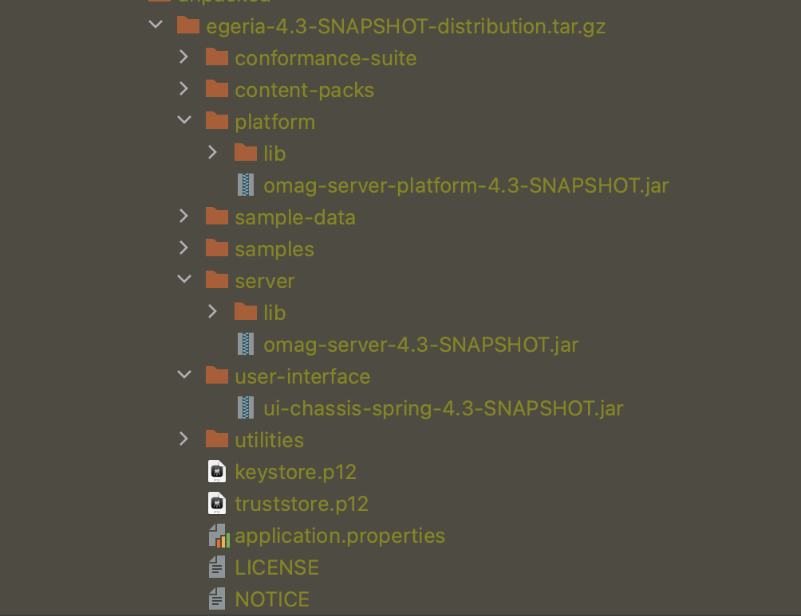

All releases¶
Release 6.0 (expected January 2026)
Release 5.3 (expected March 2025)
Release 5.3 (May 2025)¶
Release 5.3 provides significant enhancements to the mermaid visualization introduced in release 5.2. In addition, it has two new view services: Solution Architect OMVS and Data Designer OMVS designed to support Dr.Egeria.
Open Metadata Types
- The ExternalId entity has a new attribute called externalInstanceTypeName to allow the capture of the type name of an instance from a third party system.
- A new entity type called SolutionActorRole allows new roles that interact with a solution to be modelled.
- A new relationship called SolutionComponentActor allows the Actors using a solution component to be identified.
- The SolutionComponent entity has a new attribute called solutionComponentType to allow the solution architect to distinguish between different types of components.
- The InformationSupplyChain relationship has a new attribute called label for use in lineage graphs.
- The SolutionLinkingWire relationship has new attributes label and description for use in lineage graphs.
- The FileSystem classification has new attributes canonicalMountPoint and localMountPoint for normalizing file path names in a heterogeneous open metadata ecosystem.
- A new relationship called DataMapping provides a dedicated relationship for fine-grained (column-level) lineage.
- Types GovernanceDomainDefinition, GovernanceDomainSet, GovernanceClassificationLevel, GovernanceClassificationSet, GovernanceStatusSet and GovernanceStatusLevel have been deprecated in favour of using standard valid metadata values.
- New types for describing data dictionaries and data specifications are available in models 0580 Data Dictionaries and 0581 Data Field Implementation.
- The definition for a data class and the relationships associated with them have been updated in model 0540 Data Classes.
- There is a new relationship called SemanticDefinition to allow glossary terms to be attached to data definitions to provide a semantic definition to the data definition.
- The CommentType has a new valid value of "REQUIREMENT".
- The ProjectCharter entity now has a display name.
- The Anchors has a new attribute called anchorScopeGUID. It is used to identify an element that scopes/groups/owns the anchor element. For example, a glossary term is is own anchor and its anchor scope GUID is its owning glossary. This attribute allows fast scope based searches.
- The GlossaryTerm has a new attribute called aliases. It is used to identify alternative names for the glossary term.
- The position attribute in the team roles (model 0119) has been renamed to positionName to avoid confusion with the integer position attribute found in various data/schema definitions.
- The position, minCardinality and maxCardinality attributes in the SchemaAttribute entity has been moved to the AttributeForSchema and NestedSchemaAttribute relationships to match the style of DataFields.
Cascaded Delete
A number of delete API operations support a boolean cascadedDelete option. This adds extra checks and functionality to delete requests.
The default value is false which means that the element can not be deleted if certain dependent elements are still attached. These elements are not typically anchored to this element but have an important relationship.
If cascadedDelete is true, the element can be deleted irrespective of its related elements. It may also delete some of these related elements along with its anchored elements.
The table below shows the specific behaviour for each affected open metadata type. Notice that setting cascadeDelete=true is a powerful option that can delete a lot of metadata - so use with care ...
| Type Name | cascadeDelete=false | cascadeDelete=true |
|---|---|---|
| Comment | The delete will fail if a comment has child comments linked via the AttachedComment relationship. | The comment will be deleted along with the child comments linked via the AttachedComment relationship. |
| Collection | The delete will fail if a collection has member elements linked via the CollectionMembership relationship. | The collection will be deleted along with the member elements linked via the CollectionMembership relationship. |
| DataStructure | The delete will fail if a data structure has member data fields linked via the MemberDataField relationship. | The data structure will be deleted along with the member data fields linked via the MemberDataField relationship. |
| DataField | The delete will fail if a data field has nested data fields linked at end 2 via the NestedDataField relationship. | The data field will be deleted along with the nested data fields linked via the NestedDataField relationship. |
| DataClass | The delete will fail if the data class is attached to other data classes at end 2 via the DataClassHierarchy or DataClassComposition relationships. | The data class will be deleted along with the other data classes linked at end 2 via the DataClassHierarchy and DataClassComposition relationships. |
| Asset | The delete will fail if the asset is attached to other data sets at end 2 the DataSetContent relationship. | Processing determined by asset's specific type. |
| ITInfrastructure | The delete will fail if an IT infrastructure asset has assets linked at end 1 via the DeployedOn relationship. | The IT infrastructure asset will be deleted along with the assets linked via the DeployedOn relationship. |
| Database | The delete will fail if the database is attached to other deployed database schemas via the DataSetContent relationship. | The database will be deleted along with the deployed database schemas linked via the DataSetContent relationship. |
| FileFolder | The delete will fail if the folder is attached to either folders or files via the FolderHierarchy or NestedFile relationships, respectively. | The folder will be deleted along with the folders and files linked via the FolderHierarchy and NestedFile relationships, respectively. |
Implementation details
The rules for cascaded deletes are coded in the generic handlers. Specifically in method validateCascadedDelete in class OpenMetadataAPIGenericHandler. This means that the same delete logic runs regardless of the API call used to request the delete operation.
Updated View Service: Project Manager OMVS
The Project Manager OMVS now has a new call to retrieve a project with its dependent projects, resources and assigned people. This is supplied as nested JSON and also as a mermaid graph.
Updated View Service: Collection Manager OMVS
The Collection Manager OMVS now has a new call to retrieve a collection and all of its nested members. This is supplied as JSON and also as a mermaid graph.
New View Service: Solution Architect OMVS
Solution Architect OMVS supports the management and querying of Information Supply Chains and Solution Components.
New View Service: Data Designer OMVS
Data Designer OMVS supports the management and querying of Data Structures, Data Fields and Data Classes.
New View Service: Classification Explorer OMVS
Classification Explorer OMVS supports queries that show how metadata elements are linked and classified. This function was extracted from Glossary Browser OMVS and Feedback Manager OMVS.
Increased resilience in error handling
For security reasons, Egeria should not flow exception objects as responses to REST API calls. When exceptions occur, details of the exception are set into the response object and this information is used to create a new exception in the client side. This prevents internal implementation details of the servers from being exposed to external callers through the stack trace. The code that handles this exception management was only catching Exception objects. This meant that "Null Pointer Exceptions (NPEs)" and other Java Errors were being sent. This code has been changed to catch "Throwable". Typically, Java application code does not catch this severity level of error. However, it was felt that the small amount of processing that occurs under these conditions was worth it to protect the server's security.
Rename of Open Connector Framework Wrapper Beans
In order to distinguish the bean names used in the Open Connector Framework (OCF) from the beans used in the Open Metadata Framework (OMF), the Bean Wrapper classes of the OCF have been renamed as follows:
- ConnectionProperties -> ConnectionDetails
- ConnectorTypeProperties -> ConnectorTypeDetails
- EndpointProperties -> EndpointDetails
- EmbeddedConnectionProperties -> EmbeddedConnectionDetails
- RelatedAssetProperties -> RelatedAssetDetails
- ConnectedAssetProperties -> ConnectedAssetDetails
- VirtualConnectionProperties -> VirtualConnectionDetails
Reversal of open metadata relationship ends
The following relationships have had their ends reversed (ie what was end 1 is now end 2 and vice versa). This is to ensure the graph visualizations makes sense and to ensure that operations that use the anchor support (such as delete element) are able to reliably navigate to dependent elements by travelling from end1 to end2. The update is permitted because these relationships are not known to be in use.
- AssetLocation
- TeamLeadership
- TeamMembership
- PersonRoleAppointment
- TeamRoleAppointment
- ITRoleAppointment
- Meetings
- NoteLogAuthorship
- GovernanceDefinitionScope
- GovernedBy
- GovernanceResponsibilityAssignment
- GovernanceDefinitionMetric
- SchemaTypeImplementation
- DesignModelElementsInScope
The following relationships have been deprecated and replaced. The replacements have swapped ends for the same reasons as above. However, the deprecated relationships are currently in use and the new types allow elements using these relationships to still operate correctly, giving time to migrate them to the new relationships.
- ConnectionToAsset replaced by AssetConnection
- ConnectionEndpoint replaced by ConnectToEndpoint
Removal of deprecated types and attributes
As Egeria has developed over the years, the type system has also evolved. This has meant that some of the original types have been deprecated in favour of new types. At this point in time, none of the egeria code (either in the Java runtime, samples or python pyegeria libraries) and so this is a good time to slim down the type system by removing the deprecated types and attributes. The following has been removed:
- GovernanceDomainDescription
- GovernanceDomainSet
- GovernanceClassificationLevel
- GovernanceClassificationSet
- GovernanceStatusSet
- GovernanceStatusLevel
- HostLocation
- ContentManager
- NamingConventionRule
- RelationalColumnType
- RuntimeForProcess
- SoftwareServerPlatformDeployment
- DeployedVirtualContainer
- HostNetwork
- SoftwareServerDeployment
- TermISATypeOFRelationship
- GlossaryTermEvolution
- HostOperatingPlatform
- DataStoreEncoding
- PersonalContribution
- AssetServerUse
- ProcessInput
- SoftwareServerSupportedCapability
- SchemaTypeSnippet
- EngineActionExecutor
- TabularColumnType
- DesignModelElementOwnership
- ProcessOutput
- ProjectScope
- SimpleDocumentType
- DesignModelGroupOwnership
- DesignModelGroupHierarchy
- StructDocumentType
- MapDocumentType
- KnownDuplicateLink
- BoundedSchemaType
- ArraySchemaType
- SetSchemaType
- BoundedSchemaElementType
- ArrayDocumentType
- SetDocumentType
- GovernanceConfidentialityLevel
- SubjectAreaGovernance
- ZoneGovernance
- RelationalView
- DerivedSchemaAttribute
- SchemaQueryImplementation
- DerivedRelationalColumn
- SchemaLinkElement
- LinkedType
- SchemaLinkToType
- GovernanceRoleAssignment
- BusinessCapabilityControls
- DigitalServiceImplementation
- InformationSupplyChainImplementation
- SolutionComponentImplementation
- ResponsibilityStaffContact
- AssetOwnership
- GroupedMedia
- IsATypeOfRelationship
- DataContentForDataSet
- PrimaryCategory
- DataFieldValues
- ExternalGlossaryLink
- ExternallySourceGlossary
- LibraryCategoryReference
- LibraryTermReference
Release 5.2 (January 2025)
Release 5.2.1 (January 2025)¶
Release 5.2.1 continues the theme of the version 5.x releases with a focus on simplifying user experience at all levels - from the contributors to Egeria, dev-ops teams setting up Egeria and data professionals using Egeria in their daily work. Of particular note, 5.2 adds a new type of open metadata repository based on PostgreSQL and visualizations with Mermaid.
Open Metadata Types
- There are two new asset types to support Unity Catalog models: DeployedAnalyticsModel and AnalyticsModelRun are found in model 0264 Analytical Models.
- The following lineage relationships have a new attribute called label to use when visualizing lineage graphs: DataFlow, ControlFlow, ProcessCall, UltimateSource, and LineageMapping.
- There is a new type calling ActorRole to represent a role that a person, team or software executable can perform in the governance fabric. It has subtypes for PersonRole, TeamRole and ITProfileRole along with relationships to connect them to their respective ActorProfiles.
- The roles for a team are now in model 0119 - Team Roles
- The ContributionRecord entity type is now in model 0125 - Contribution. A new Contribution relationship has been defined to allow contribution records to be attached to any type of actor profile. The PersonalContribution relationship has been deprecated.
Support for user authentication via the secrets store connectors
Secret Store Connectors are now able to support the authentication of users calling the Open Metadata View Services (OMVS).
Extended support for Unity Catalog release 0.3.0
The Unity catalog connectors now work with the secrets store. They also support models, update requests and catalog the schemas of tables as well as the input/output parameters and dependencies of a function.
Support for mermaid visualization
Mermaid is a markdown extension for representing diagrams using structured text that can then be rendered in a JavaScript environment. Selected Open Metadata View Services(OMVS) REST API calls produce the mermaid markdown to render an illustration of the metadata elements returned. See Mermaid Diagrams for more details.
New open metadata native repository based on PostgreSQL
This release brings you a new repository choice. There is now a PostgreSQL backed repository that offers fast bi-temporal support for storing open metadata. The repository is stored in its own database schema. When a server configured to use this repository type starts up, its postgreSQL repository connector connects to the database (using a supplied secrets store) and defines the tables/columns it needs in the database schema. It manages a control table to ensure it is only used by the designated server. There are six other tables defined: two for entities, two for classifications and two for relationships. More details on this repository can be found at PostgreSQL Repository Connector.
New delimiters for placeholder variables
The latest level of IntelliJ only allows variables in JSON request bodies that are delimited with {{ and }} to be used in an HTTP client collection if the value is defined in either an environment or directly in the HTTP Client collection file. This change mean's that Egeria's placeholder variable support no longer works in an HTTP client collection. As a result, Egeria's placeholder variable support has been updated to use ~{ and }~ as placeholder variable delimiters.
Changes to the Open Metadata Repository Services (OMRS)
The implementation of the PostgreSQL Repository connector uncovered two errors in the OMRS:
- The metadata collection id was not being set up in an entity's classifications. This means they were effectively "local cohort", and updatable by any cohort member. Classifications are now assigned their metadata collection Id when they are created.
- Attributes that are of type enum did not have their typeGUID and typeName set up - this meant it was not possible to know which enum typeDef to use. It was not noticed before because the egeria services above the OMRS were awary of the typeDef where the attribute was being used and could infer the type. Enum attributes now have the typeGUID/typeName set up correctly.
The impact of these fixes has caused some minor changes to the OMRSRepositoryHelper interface. This will only affect implementations of the repository connector.
Release 5.1 (October 2024)
Release 5.1 (October 2024)¶
Release 5.1 builds on the simplification theme from release 5.0.
Open Metadata Types
- The ConnectorType entity type has a new attribute called supportedDeployedImplementationType which replaces deployedImplementationType to separate the technology it supports from other uses of deployedImplementationType* that identify its implementation technology.
- The CatalogTarget relationship is now multi-link which means it is possible to have multiple instances of this relationship between the same two entities. It also has two new attributes: permittedSynchronization and deleteMethod.
- The DataAssetEncoding classification, that attaches to a DataAsset, replaces the DataStoreEncoding classification. The DataStoreEncoding is deprecated.
- There is a new type of entity called VirtualRelationalTable for representing virtualized tables.
- There are two new relationships relating to governance actions. TargetForActionType and TargetForActionProcess allow targets for action to be pre-defined for a governance action type or governance action process respectively. The GovernanceActionProcessFlow relationship receives a new property called
requestParameters. Finally, there is a new entity type called GovernanceActionProcessInstance that represents a running instance of a Governance Action Process. It captures the start and end time of the process's execution.
Unity Catalog Support
There are new survey services and integration connectors to support the new open-source Unity Catalog (UC).
New content packs for connectors, templates amd reference data
This release creates specialized content packs for different types of technologies. Within the content pack are the connector and governance service configurations, plus templates and reference data to be able to survey, synchronize metadata and govern that type of technology. The content packs are as follows:
New View Service: Runtime Manager OMVS
Runtime Manager OMVS is a new view service that enable the user to retrieve reports from different OMAG Server Platforms and OMAG Servers on their configuration and runtime status. It is also possible to perform specific types of actions on these systems depending on their type. For example, it is possible to start and stop servers on a platform, load archives into a metadata access store, restart integration connectors on an integration daemon, refresh the engine configuration in an Engine Host server.
Technology type for file directories changed from "FileFolder" to "File System Directory
Automated Curation OMVS provides methods to query the connectors and templates for different types of technology types. The names of the technologies come from the Deployed Implementation Type reference values. The value for a directory (folder) in a file system was "FileFolder" in earlier releases which is the name of the open metadata type used to catalog these types of resources. The technology name has been changed to "File System Directory" to better reflect the name of the technology.
Smarter integration daemon
In addition to the regular refreshes, the integration daemon will refresh an integration connector whenever a new catalog target is attached.
Extensions to the Open Integration Framework
The OIF includes a RequestedCatalogTargetsManager class plus new base class methods for integration connectors that support dynamic configuration through catalog targets. This means the specialized implementation for processing a single catalog target can be implemented in a simple class, and the IntegrationConnectorBase will handle the changing list of catalog targets.
Open Lineage Connectors now work with catalog targets
The Open Lineage Connectors now support dynamic configuration through catalog targets. This means that new Kafka Topics supplying open lineage events can be dynamically configured and new publishing destination APIs and folders can be added to the running connectors.
Changes to the default Configuration Document Store
The Google Tink methods used in the encrypted config document store have been deprecated for some time. This connector was written (and used as the default) at a time when certificates and passwords were a part of the configuration document. With the introduction of the secrets connector, these are now stored in protected areas outside the configuration document so that an encrypted store is not necessary. This PR switches the default config store to the clear-text file implementation. In a later release, the encrypted file version of the connector will probably be removed unless updates to it to replace the deprecated methods are contributed to the project by an interested party.
If you are currently using the encrypted file configuration document store, you can continue to use it by setting the platform.configstore.provider value in the platform's application.properties file.
platform.configstore.provider=org.odpi.openmetadata.adapters.adminservices.configurationstore.encryptedfile.EncryptedFileBasedServerConfigStoreProvider
Alternatively, if you with to switch to the clear-text version, use the administration services getStoredConfiguration() method to extract the JSON for your each of your server's configuration document while the encrypted configuration document file store is in place. Then delete the encrypted files from platform/data/servers and restart the platform with the clear-text configuration document store in place. Use the administration services setOMAGServerConfig() method to add your saved JSON back into the configuration document store.
Release 5.0 (July 2024)
Release 5.0 (July 2024)¶
Release 5.0 is a major functional release focused on usability, both from the point of view of the first-time user of Egeria, and developers of the code. It has six themes:
- Simplified up and running - improvements to the OMAG Server Platform and administration services to make it easier to set up and run, plus new sample server configurations that mean you can get Egeria up and running without needing to understand the administration services.
- A python client - pyegeria provides a python API covering Egeria's administration and operational services plus many of the Open Metadata View Services (OMVSs) provides access to Egeria through this popular programming language for administrators and data professionals.
- Content pack of connector metadata - metadata to pre-configure the connectors supplied with Egeria, and provide valid value sets describing technology types and file types.
- Digital Product Support - new APIs for creating a digital product catalog.
- Survey Support - new framework, services and report utility to support the surveying of digital resources to understand its contents before embarking on wholesale cataloguing and governance.
- Reduction of technical debt - there has been internal code changes to remove deprecated code, remove the duplication of type information, and many bug fixes :).
Open Metadata Types
- The Anchors classification is able to store the type of the anchor as well as its GUID.
- A new classification called RootCollection can be added to a collection entity to indicate that it is the root of collection hierarchy.
- The Collection entity has a new attribute called collectionType that can be used to identify the concept that the collection represents.
- A new supertype called Action has been added to the ToDo and EngineAction.
- The ActionSponsor relationship now links an Action to a Referenceable.
- The Process entity has a new attribute called lastReviewTime.
- The EngineAction entity has new attributes called requesterUserId and requestedStartDate.
- A new classification called PersonalProject can be added to a project entity to indicate that it is an informal project that have been created by an individual to help them organize their work.
- A new classification called StudyProject can be added to a project entity to indicate that it is a focused analysis of a topic, person, object or situation.
- New properties called priority, projectHealth and projectPhase has been added to the Project entity to represent the status of the project.
- A new classification called DataScope can be added to a referenceable entity (typically a DataStore or DataSet) to define the scope of the associated data resource in space and time.
- Although not yet implemented in the Engine Host, there are types for a new type of governance engine called the ContextEventEngine and its corresponding governance service called ContextEventService. This new engine is for managing context events, scheduling and associated actions.
- A new entity called a ContextEvent plus associated elements has been added to provide a means to capture significant events that impact users, data, services, etcetera, to be recorded and used to explain why blips occurred in the past, or plan and take action to mitigate against blips in the future.
- There is a new schema extraction relationship called DiscoveredLinkedDataField that can be used to describe associations between data fields. The DataField entity has new attributes to align it more closely with SchemaAttribute.
- There are new lineage relationships called UltimateSource and UltimateDestination can be used to capture the size and edges of an element's lineage graph have been added.
- The GroupedMedia relationship is deprecated in favour of DataSetContent.
- The DataFile type has a attribute called fileExtension. New types that inherit from DataFile have been defined for a wide range of file types: SpreadsheetFile, XMLFile, AudioFile, VideoFile, 3DImageFile, RasterFile, VectorFile, SourceCodeFile, ExecutableFile, ScriptFile, BuildInstructionFile, YAMLFile, PropertiesFile, and ArchiveFile. There is also a new relationship called ArchiveFileContents to identify the contents of an archive file.
- There are new attributes called isCaseSensitive and category for ValidValueDefinition that provides additional information used to match valid values. In addition, there are two new types of valid value relationship: ValidValueAssociation and ConsistentValidValues.
- The ConnectorType entity has a new attribute called deployedImplementationType to allow a connector writer to record the deployed implementation type that the connector works with.
- The Template classification has a new property called versionIdentifier. This model also includes a new relationship called CatalogTemplate to identify a template for a particular type of technology.
- The CatalogTarget relationship has two new properties: configurationProperties and metadataSourceQualifiedName.
- The Topic entity how has a topicName attribute.
- ConsistentValidValue is a new relationship that links valid values that represent different properties, and are typically seen together in the same data item.
- SpecificationPropertyAssignment is a new relationship that links a valid value that represents a type of configurable property with the element that represents the associated implementation.
XTDB repository connector is now in egeria.git
The XTDB repository connector is now located in the core Egeria git repository which means it is always available in the containers and distributions. This change is in recognition that XTDB is our premier metadata repository. There are three new administration commands to simplify the configuration of an XTDB repository.
- Configure XTDB with an in-memory repository
- Configure XTDB with a local file-based key-value store
- Configure XTDB with a connection, allowing more complex configurations to be set up
The java package name of the integrated version of the connector has changed from org.odpi.egeria.connectors.juxt.xtdb.repositoryconnector.XtdbOMRSRepositoryConnectorProvider to org.odpi.openmetadata.adapters.repositoryservices.xtdb.repositoryconnector.XTDBOMRSRepositoryConnectorProvider so it is possible to continue to run the original version of the XTDB connector in V5.0.
XTDB hang, or platform exit due to mismatch crypto library
On the latest level of the MacOs operating system we have experienced hangs during server startup, or the OMAG Server Platform exiting with a message complaining about the unsafe load of a cryptographic library. A question has been raised with the XTDB community to find out more about this library. In the meantime, there is a workaround if you see this issue: set the following environment variables before starting your OMAG Server Platform. This switches XTDB to using its own cryptography libraries.
XTDB_DISABLE_LIBCRYPTO=True;XTDB_ENABLE_BYTEUTILS_SHA1=True
Improved/changed terminology
The following concepts have been renamed to improve the clarity of their function, particularly in the documentation.
Open Lineage Services and Open Lineage Server renamed to Lineage Warehouse Services and Lineage Warehouse respectively
Our use of the term "open lineage" for our lineage governance server has been causing confusion with the newer Open Lineage standard and project. As a result, the Egeria Open Lineage Services are now called the Lineage Warehouse Services and the OMAG Server they run is called the Lineage Warehouse. The new name is more descriptive and avoiding clashing names is desirable. The change has been made cleanly both to the code and the document site (ie no backward compatible deprecated methods) to ensure the name clashing is completely removed. Every should work as before, except that when migrating a open lineage server to version 5.0, it is necessary to reconfigure what was the open lineage services section to the new lineage warehouse services section. The structure is the same, but the class name has changed from OpenLineageConfig to LineageWarehouseConfig, and the connectorProviderClassName of the JanusGraph connector has changed from org.odpi.openmetadata.openconnectors.governancedaemonconnectors.openlineageconnectors.janusconnector.graph.LineageGraphConnectorProvider to org.odpi.openmetadata.openconnectors.governancedaemonconnectors.lineagewarenouseconnectors.janusconnector.graph.LineageGraphConnectorProvider. Full details of this change are describes in the Administration Guide.
Governance Action is renamed to Engine Action
If you have been using Egeria for a while, you may be familiar with the term Governance Action as the mechanism used to control the execution of automated actions in the Engine Hosts. In release 5.0, Governance Action is renamed to Engine Action to create a greater name differentiation between the concepts that are used to define the governance behaviour and those used to control the execution of this behaviour. The term Governance Action is now used as a general term for a Governance Action Process or a Governance Action Type. There is also a differentiation between a Governance Action Type that is used to initiate a standalone Engine Action and a specialized Governance Action Type called a Governance Action Process Step that describes a single step in a Governance Action Process.
New Python client called pyegeria
A new python client called pyegeria for Egeria's administrative, platform and server operational services is available on pypi. It also includes coverage of many of the view services. Future versions will add the metadata highway and governance server operational services.
Integration Daemon runs each integration connector in its own thread
Integration connectors running in an integration daemon are now each given their own thread to run in so that a busy integration connector does not prevent other integration connectors from running.
Improved administration
New administration commands for basic server properties
The administration services support new commands to set up, retrieve and clear the basic server properties in a server's configuration document in one operation. These properties are serverDescription, organizationName, localServerUserId, localServerPassword and maxPageSize. The new calls are described in the Administration Guide.
New administration command to retrieve the metadata collection name
The administration services support a new command to retrieve the metadata collection name set up for a repository in a cohort member server. This complements the calls to set up the metadata collection name and metadata collection id, and retrieve the metadata collection id.
New administration commands for the Engine Host
The administration services support new commands to simplify the configuration of an engine host. It is no longer necessary to match the type of the engines you are configuring with the associated engine service. You can now specify a single list of governance engine that you want to run in the engine host and Egeria will work out which engine service to manage each of them. See the Administration Guide for more information.
New administration commands for the Integration Daemon
The administration services support new commands to simplify the configuration of an integration daemon. It is now possible to configure all the integration services in a single call. There are also new methods to work with all the configuration in the integration daemon services as a single request. See the Administration Guide for more information.
New administration commands for the View Server
The administration services support new commands to simplify the configuration of an view server. It is now possible to configure all the view services in a single call. See the Administration Guide for more information.
Placeholder variables supported in the configuration document
It is possible to add placeholders in string properties of an OMAG Server's configuration document. The replacement values are configured either by a REST API call (OMAG Server Platform only), or, more typically in the application.properties for either the OMAG Server Platform or OMAG Server Runtime. The placeholders are replaced by these values each time the server starts. This means that the server can be run in different environments without reconfiguring the server. Full details can be found in the Configuration Document documentation.
Support for default configuration documents
There is a new application.properties property supported by the OMAG Server Platform that allows a default configuration document to be set up for the configuration document store. This provides the initial content for each new server configuration created on the platform. The new property is called platform.default.config.document and is described in the Administration Guide.
Placeholder properties supported in metadata templates
It is possible to add placeholders to properties in metadata elements that are used as templates when creating new metadata elements. The replacement values are supplied on the request to create the new element from the template.
Improved framework services
The framework services provide common services to the Open Metadata Access Services (OMASs). The Open Governance Framework Service includes a new set of services called the Open Governance Service that provides services to define governance actions such as governance action processes and governance action types, and the initiation of engine actions either directly or via a governance action process or governance action type.
All OMASs now have clients for the Connected Asset Service, Open Metadata Store, Open Governance Service and the Open Integration Service.
New Survey Action Framework (SAF)
The Survey Action Framework (SAF) supports a new type of connector called a survey action service that implements a survey of the contents of a particular digital resource such as a directory (folder) on the filesystem, a database or a file. The results of its analysis are stored in open metadata as a survey report linked off of the asset that describes the surveyed resource. The purpose of the survey report is to help in the initial understanding of a deployed IT landscape to help decide where to focus future effort in cataloguing and governing key resources. They can also be scheduled to run at regular intervals, creating a history of how the digital resource is changing over time.
There are implementations of three survey action services: one for a directory (folder, once for a file and another, more specialised service, for CSV files. There is also a SurveyReport utility to print the resulting report.
The survey action services run in the Engine Host. There is a new Open Metadata Engine Service (OMES) to support survey action services. It is called the Survey Action OMES.
Open Discovery Framework (ODF) is now deprecated
The function of the Survey Action Framework (SAF) is based on the Open Discovery Framework (ODF), which has now been deprecated. The reason for this is two-fold. Firstly the use of the term "discovery" in the framework's name is unfortunate since it is not the only mechanism that Egeria has for discovering metadata. This makes the descriptions about metadata discovery confusing. Secondly, the Open Discovery Framework has some usability issues relating to the discovery of schemas that have now been fixed in the Survey Action Framework. The Open Discovery Framework will remain in the codebase for at least 6 months to allow time for the existing open discovery services to move to the Survey Action Framework. It is recommended that all new implementations use the Survey Action Framework.
New Apache Atlas Survey Action Service
There is a new survey action service that provides a report on the content of an Apache Atlas server. It is called the Apache Atlas Survey Service. This survey action services complements the Apache Atlas Integration Connector that exchanges metadata between the open metadata ecosystem and an Apache Atlas server.
Extended support for file system monitoring
The context for all the Open Metadata Integration Services (OMIS) has been updated to support a file system listener. This means that integration connectors can easily monitor changing files and directories. This can be useful for situations where new information is being exchanged with open metadata using files such as CSV files and spreadsheets.
New View Service: Action Author OMVS
Action Author OMVS is a new view service for managing the definitions of governance action types and and governance action processes.
New View Service: Automated Curation OMVS
Automated Curation OMVS is a new view service that enables the user to set up integration connectors in an integration daemon, run engine actions and governance action processes.
New View Service: Feedback Manager OMVS
Feedback Manager OMVS is a new view service that supports the management of feedback (comments, likes, informal tags, notelogs and reviews) from users. The feedback support in Glossary Browser OMVS has been removed.
New View Service: Project Manager OMVS
Project Manager OMVS supports the definition and management of projects. Projects can themselves be organized hierarchically.
New View Service: Collection Manager OMVS
Collection Manager OMVS supports the organizing and browsing of metadata in collections. Collections can themselves be organized hierarchically. An example of its use is in managing the collections of assets that make up digital products.
New View Service: Valid Metadata OMVS
Valid Metadata OMVS supports the retrieval and maintenance of valid values for open metadata.
Improved anchor support
Anchor classifications now include the type name and domain of the anchor entity. This allows the Anchor classification to be used to search for string values in any element that is anchored to a particular type of element.
Removal of JavaScript User Interfaces
The original intention with the UIs was to consolidate their backend services onto the OMAG Server Platform/Runtime. Unfortunately, neither UI code based is building and the security scanners are reporting serious CVEs with the JavaScript code bases. There is no-one left in the community that is able to work with the JavaScript and so, for now these UIs have been deprecated. The runtime services that support the UIs have also been deprecated and removed from the runtime build. The code is temporarily still in the repository and will be cleaned up in a future release if no progress is made on the JavaScript code.
Deprecation of Egeria UI Application
Due to the addition of the new View Services and support for tokens in the OMAG Server Platform and OMAG Server runtimes, the Egeria UI Application is now deprecated. New UI components should use the Open Metadata View Services (OMVS). The Egeria UI Application assembly, and the open metadata assembly have also been deprecated.
Asset Catalog, OMAS Subject Area OMAS and Glossary View OMAS
The function of these services has now moved to Glossary Manager OMAS, Glossary Browser OMVS and Asset Catalog OMVS.
Repository Explorer OMVS, Type Explorer OMVS, Dynamic Infrastructure Explorer OMVS, Server Author OMVS, Glossary Author OMVS are now deprecated
These services have been removed from Egeria's build, but their code is temporariliy still in the Egeria.git repository.
New file extensions to Egeria' standard files
Files produced by Egeria supplied connectors now have specific file extensions to help identify them in the file system. Previously they used the file extension for their format 9such as .json.
| File Extension | File Type Name |
|---|---|
| omarchive | Open Metadata Archive File |
| config | OMAG Server Configuration Document |
| cohortregistry | OMAG Server Cohort Registry |
| omalrecord | Open Metadata Audit Log Record File |
| auditlog | Open Metadata Audit Log Folder |
| openlineageevent | Open Lineage Event File |
ConnectorTypes can now identify the deployed implementation type for their connector
The developer for a connector can provide information about their connector's implementation in a connector type object that can be retrieved from its connector provider. The Open Connector Framework (OCF) has been extended to allow the connector type to include the deployed implementation type in addition to the type name of the asset subtype that this connector represents. Assets of this type are linked to connection objects via the ConnectionToAsset relationship.
Integration Connector Providers can now list catalog target types
The developer of an integration connector can provide information about the third party technology it exchanges metadata with through catalog target types.
Overriding configuration properties and metadataSourceQualifiedName for each catalog target
An integration connector's behaviour is controlled through a map of configuration properties passed in the configurationProperties attribute of the integration connector's connection object. It is now possible to override the settings of these properties for each catalog target that the integration connector is processing. These overriding configuration properties are stored in the CatalogTarget relationship's properties. Similarly, the metadata collection that elements catalogued by an integration connector is controlled by the metadataSourceQualifiedName attribute of the RegisteredIntegrationConnector relationship. It is now possible to override the metadata source qualified name for each catalog target that the integration connector is processing. The overriding value is also stored in the CatalogTarget relationship's properties.
Governance Service Providers can now export their specification
The developer of a governance service can provide information about the request types, request parameters and action target types it consumes and produces making it easier for consumers creating governance engine definitions, governance action types and governance action processes to incorporate the governance service into their work.
Extension to the OpenConnectorArchive
The OpenMetadataArchive.omarchive (was OpenMetadataArchive.json) now contains reference data for many file types and deployed implementation types. The deployed implementation types include details of Egeria's runtimes and services and how they link together. The deployed implementation types are also linked to details of the connectors that work with the associated technology. This is to assist someone setting up new automated curation and governance activities in the open metadata ecosystem.
IntelliJ HTTP Client
The omag-server-platform assembly created during an egeria build now includes script files that exercise Egeria's REST API services using IntelliJ's HTTP Client. These mirror the Postman collections that are also found in the assembly.
Default Audit Log console output has changed
The default audit log output to the console for newly configured servers will no longer include the Event log entries and the Types log entries. Existing servers will continue to log as before. The audit log entries displayed on the console by a server can be changed using the Administration Services.
Management of open metadata type definitions
As the Egeria code base evolved, sets of definitions for the unique identifiers and type names of the open metadata types appeared in multiple modules. There was a set in the open metadata archive helper, the generic handlers, multiple OMASs and the Open Governance Framework. This was in addition to the original definitions in the open metadata type archive itself. In release 5.0, these copies of the open metadata type identifiers have been consolidated into one set found in the Open Governance Framework. There is still work to change the type definitions in the open metadata type archive to use the definitions from the GAF. This change removes the inconsistencies and gaps in the definitions. It also makes it easier to discover where a particular open metadata type is used.
Deprecation of Data Engine Proxy and Data Engine OMAS
These services have been deprecated since they are specialized for IBM's Information Server product. IF support for this product is required in the future then it will be reimplemented in the Integration Daemon.
Removal of the Anonymous Repository Services
The anonymous versions to the OMRS Metadata Collection REST APIs have been removed from Egeria's runtimes since they do not include caller information, and therefore provide opportunities for a denial of service attack. These services were deprecated in version 2 of Egeria.
- getMetadataCollectionId
- getEntity
- getRelationship
Release 4.3 (September 2023)
Release 4.3 (September 2023)¶
Release 4.3 continues the process of improving Egeria's usability. These changes have some effect on backwards compatibility but will lead to a smoother experience in the long term.
Change to the original Open Metadata Assembly
When the gradle build runs in the core egeria git repository (egeria.git), it creates an assembly of the Egeria runtimes. This is located in the build directory under open-metadata-distributions/open-metadata-assemblies. In release 4.2, this assembly was updated to create a new directory called platform which held the runtime and libraries for the OMAG Server Platform. The docker image for Egeria (and hence the helm charts) was updated so that it runs the platform from this new directory. The platform runtime was originally located in a directory called server which caused confusion. The content of the server directory was not changed at that time. However, in 4.3, the server directory now contains a new cloud native runtime for a single OMAG Server. This is the structure you will see in 4.3.

New assemblies for the OMAG Server Platform and Egeria UI Platform
The single assembly described above suffered from conflicts of runtime settings between the different runtimes. The result was a complex and less than obvious organization of the files. There are new assemblies created during the core egeria build that are focused on a single runtime. Their structure is simpler, making it more obvious which files/properties are controlling each runtime. These assemblies are located under open-metadata-distribution. Each assembly is created by its own module. The egeria-ui-application module builds the an assembly for the Egeria UI Application. This includes the certificates and property files used by this application. The OMAG Server Platform assembly is created by a module called omag-server-platform. It includes three main directories:
platform- The platform runtime.etc- Utilities and reports.opt- Optional content including sample metadata (loadable as an Open Metadata Archive), sample data, sample applications that call the Egeria APIs and postman collections
The top level directory also includes a docker build configuration that packages files under the platform directory into a docker container and publishes it to your docker daemon. Once egeria's grable build is complete, you can add and remove libraries and other content from the platform directory and then build your own customized docker container.
Each directory in the assembly includes a README.md file to explain its contents.
New OMAG server standalone runtime
We are releasing tech preview for the standalone OMAG server spring boot launcher application. This is the first milestone achieved as result of the work planned in the Cloud Native workgroup. It is step forward to enable additional deployment/operation model more suitable for orchestrated container runtime environment such as Kubernetes. Functionally, it runs the same set of OMAG server capabilities/services as if you are running 'virtual' server instance on an OMAG platform. Irrespective of the operating style the OMAG servers are always interoperable.
We are working to update the guides on the website to address this new feature.
If you are curious, you can already try it out by following technical how-to instructions on github or check-out the new egeria-server helm chart showcasing simple OMAG server deployment.
Feedback is always appreciated.
Database connectors are now in egeria.git
The JDBC database connectors are now located in the core Egeria git repository. The JDBC Resource Connector now includes helper functions when issuing simple SQL commands.
Developer utilities are now in egeria.git
The utilities located in egeria-dev-projects.git are now located in egeria.git under the open-metadata-resources module. They are now included automatically in the omag-server-platform assembly. These utilities are used in the Developer Dojo. This will be updated to use the new assembly once release 4.3 is shipped.
Extended integration connector function
Integration connectors can now check to see if they are in the middle of refresh() processing. This is valuable in multi-threaded operation, for example when processing events. Typically, many of the events that are generated while the connector is being called to refresh() are caused by the connector's activity. There is a new method on the integration context called isRefreshInProgress(). It returns true if the connector is currently running its refresh() method. An example of how to use this method is found in the developer guide.
New configuration command for when a cohort member moves platform
Servers that are members of a cohort regularly broadcast their network address to other members to allow them to dynamically configure their federated query support. This network address is configured in the OMAG Server's configuration document as the localRepositoryRemoteConnection's endpoint address. When an OMAG Server is relocated to a new platform, this address must change. There is a new administration command called resetRemoteCohortURL with URL POST {platformURLRoot}/open-metadata/admin-services/users/{userId}/servers/{serverName}/local-repository/configuration/remote-repository-connector-url. The new URL is passed in the request body:
{
"class": "URLRequestBody",
"urlRoot": "{platformURLRoot}/servers/{serverName}"
}
Open Metadata Integration Services (OMISs) updates
- Category Integrator OMIS supports the stewardship services from Asset Manager OMAS through the
StewardshipExchangeService. -
A number of fixes have been made to the context methods of the OMISs that were incorrectly exposing the
userId,externalSourceGUIDandexternalSourceNameparameters. These have been corrected so these values come from the connector's configuration. The affected OMISs are:
Apache Atlas Integration Connector
The Apache Atlas Integration Connector has been enhanced to catalog Assets and Lineage from Apache Atlas into the open metadata ecosystem.
A future version will maintain semantic assignment relationships between the glossary terms, exchanged in the first release of the connector, with the Apache Atlas assets it finds.
Release 4.3 also extracted the java client from this connector and created a new resource connector for Apache Atlas. The resulting Apache Atlas REST Connector provides a Java API that calls the Apache Atlas REST API with no dependencies on Apache Atlas nor the Hadoop libraries it depends on. This resource connector is used in the Apache Atlas Integration Connector and is intended for new connectors for Apache Atlas planned to be written for a future release.
Conformance Test Suite
There is a new option on the repository workbench to allow you to restrict the number of different types of instances that are tested. By default, all combinations of the types supported by the technology under test, are used when testing the instance methods. For native repository connectors, that can add up to a lot of tests, taking many hours to run. In 4.3, we have introduced a new option called testEntityTypes that is added to the workbench configuration. It is set to a list of entity types such as ["Asset", "InformalTag"] and the tests are restricted to these types, their super types and any relationships and classifications that can connector to these entity types.
Metadata Observability
There is a new Audit log severity called ACTIVITY that is used to report activity in the open metadata ecosystem. This severity is used when logging messages about:
- The REST API calls made by each user.
- The requests to retrieve, create and maintain assets.
Open Metadata Types
- The HostClusterMember relationship has new properties memberRole and additionalProperties to improve ability to describe a host cluster operation.
- The DataSet, DataStore, DeployedAPI, DeployedSoftwareComponent and DataFeed entity types each have a new attribute called deployedImplementationType to describe the technology supporting the associated component. This addition is to enable integration connectors to be more precise in describing the technology they are cataloguing. This attribute is also used in SoftwareServerPlatform, SoftwareServer and SoftwareCapability entity types; along with the ServerPurpose and CloudPlatform classification. There are subtypes of DataStore (LogFile, GraphStore, MetadataRepository) have been modified because they already include the property and duplicate properties in the type hierarchy cause indexing problems in some repositories. Similarly, there were duplicated deployedImplementationType properties in the ServerPurpose classification affecting RepositoryProxy and MetadataServer classifications.
- A new entity type called RelationalDatabase has been added to distinguish databases that follow the relational schema and can be accessed through JDBC.
- The Person entity type has a new attribute called residentCountry to describe the primary country of residence. In addition, there is a new attribute called timeZone to describe the time zone of the location where this person is located.
New Helm chart and dependency updates
New helm chart egeria-server to demonstrate stand-alone omag server deployment in kubernetes.
Dependency updates include:
- Egeria docker image 4.3
- Strimzi 0.37.0 and Kafka 3.5.1
- Jupyter image based on minimal-notebook:lab-4.0.5 and egeria notebook fixes V4.3
Release 4.2 (July 2023)
Release 4.2 (July 2023)¶
Release 4.2 has a focus on runtime optimization and the start of the work to optimize the process of getting Egeria up and running in a new environment. This theme is continued in release 4.3.
OMAG Server Topic Configuration
Except when the no-topics option is specified, the configuration document helper methods add a connection for both the InTopic and the OutTopic to each Open Metadata Access Service (OMAS) configuration irrespective of whether the particular OMAS supports these topics. This has no impact at runtime because the OMASs simply do not start topics they do not use. However, from a set-up point of view, it is misleading - and can result in an organization thinking they need to set up (and may be pay for) topics that are not use.
This release adds knowledge of whether an OMAS supports the inTopic and/or OutTopic to the AccessServiceDescroption class. This information is used by the configuration helper methods when setting up the access service configuration. For example, this is the list of topics for cocoMDS1 at release 4.2:
List of Topics used by cocoMDS1
egeria.omag.server.cocoMDS1.omas.assetcatalog.outTopic
egeria.omag.server.cocoMDS1.omas.assetconsumer.outTopic
egeria.omag.server.cocoMDS1.omas.assetmanager.outTopic
egeria.omag.server.cocoMDS1.omas.assetowner.outTopic
egeria.omag.server.cocoMDS1.omas.communityprofile.outTopic
egeria.omag.server.cocoMDS1.omas.dataengine.inTopic
egeria.omag.server.cocoMDS1.omas.datamanager.outTopic
egeria.omag.server.cocoMDS1.omas.digitalarchitecture.outTopic
egeria.omag.server.cocoMDS1.omas.governanceengine.outTopic
egeria.omag.server.cocoMDS1.omas.assetlineage.outTopic
Notice Data Engine OMAS supports an InTopic only. All of the others support just an OutTopic. Prior to this change, each OMAS had both an InTopic and an OutTopic configured.
OMAG Server Platform
- Fixed bug with http headers propagation feature.
- The name of the JAR file to start the platform is now
omag-server-platform.jarin theplatformdirectory of the distribution/install image. The previousserver-chassis-spring.jaris still present in theserverdirectory, to allow time for teams to migrate their operational scripts. However, this old jar file name is deprecated and will be removed in a future release. - The REST API calls to start and stop OMAG Servers have been moved from the Administration Services to the Platform Services. The original Java client and REST API calls are still available, but they have been deprecated and will be removed at a later date. This change is to separate the operational responsibilities from the configuration responsibilities. Prior to this change, the operational responsibilities where split between the Platform Services and the Administration Services.
New My Profile Open Metadata View Services (OMVS)
In this release we have added a new view service called My Profile OMVS to aid organizations writing user interfaces (UIs). My Profile OMVS returns information about the supplied user's profile. It is intended to supply information about the logged-on user.
Open Metadata Types
- The CollectionMembership relationship has new properties stewardTypeName, stewardPropertyName, userDefinedStatus and notes to improve ability to manage collection membership.
Release 4.1 (May 2023)
Release 4.1 (29 May 2023)¶
Open Metadata Types
- A new relationship SampleData links an Asset entity describing a collection of sample data that originates from the resource represented by the Referenceable entity.
- A new sourceVersionNumber attribute has been added to the SourcedFrom relationship type to allow the version of the element that is copied to be recorded.
- A new classification called TemplateSubstitute has been added to isolate relationships included in templates from normal metadata queries.
- The GlossaryTermEvolution relationship has been deprecated.
- New classifications EditingGlossary and StagingGlossary have been added to the 0385 model to support the controlled glossary development process.
- A new classification called DataFieldValues allows the characterization of a collection of data values.
- A new attribute called publishVersionIdentifier has been added to GlossaryTerm to allow authors to control the version of published terms.
New Open Metadata View Services (OMVS)
In this release we have added the following view services to aid organizations writing user interfaces (UIs):
Glossary specific security
The Server Metadata Security Connector has been extended with a new optional interface that allows the connector to control authorization requests to glossaries. See the Metadata Security feature for more details.
Secrets store connectors
The Secrets Store Connector enables a connector to access its secrets (passwords, certificates, ...) from a secure location at runtime.
HMS listener
The Hive Metastore (HMS) listener runs in the HMS process, and issues Egeria Events when HMS tables and added, dropped or altered. The git repository for the listener is https://github.com/odpi/egeria-listener-hms.
Other functional fixes and enhancements
- Fixed CORS support in ui-chassis-spring and code clean-up from previous Spring migration.
- Added back support for 'LineageMapping' relationship in Open Lineage Services.
- Simplified Data Engine OMAS lineage creation by removing port aliases.
- Fixed Asset Catalog OMAS search by name for Process assets.
Release 4.0 (March 2023)
Release 4.0 (March 2023)¶
Special note on Java support
Java 17 is now required to build and run Egeria.
The build is now driven by Gradle
Gradle is now used as the build tool, replacing maven.
We make use of the gradle wrapper which means there is no need to explicitly install Gradle.
A build can be started by running ./gradlew build from the root of the repository.
Your connectors and applications can continue use Gradle, or you can continue to use Maven. Our artefacts are still available via maven central.
A BOM (Bill of Materials) is now available for use in your own projects. This makes it easier to align dependencies with those of egeria. To make use of the BOM you can use the following in gradle:
dependencies {
implementation platform('org.odpi.egeria:bom:4.0.0')
}
A similar approach can be used with maven:
<dependency>
<groupId>org.odpi.egeria</groupId>
<artifactId>bom</artifactId>
<version>4.0.0</version>
<type>pom</type>
<scope>import</scope>
</dependency>
./gradlew build -PadminChassisOnly
The build also now benefits from improved checks to avoid conflicting capabilities & ensure accurate dependencies.
Repository Connector Authors - Note change in InstanceType
A number of fields have been removed from the Open Metadata Repository Services (OMRS)'s InstanceType in order to improve the marshalling/unmarshalling performance of open metadata instances. If your connector has its own methods for populating this element then please amend to remove these obsolete fields.

Integration Connector Authors - Note change in Java packages and build dependencies
Version 4.0 adds the Open Integration Framework (OIF) to provide the interfaces for an integration connector. They were originally implemented partly in the integration daemon services and the administration services. The introduction of the OIF creates a cleaner interface for integration connectors. However, it does have an impact on existing integration connectors:
-
The build script for the connector needs to include the OIF as a dependency (replacing the integration-daemon-services-api module).
- For example, for Gradle use:
compileOnly ':open-metadata-implementation:frameworks:open-integration-framework'with the egeria.git repository andcompileOnly 'org.odpi.egeria:openlineage-integration-connectors'for connectors in other repositories.
- For example, for Gradle use:
-
The package names for the integration connector interfaces change from
org.odpi.openmetadata.governanceservers.integrationdaemonservices.connectorstoorg.odpi.openmetadata.frameworks.integration.connectors.
Open Metadata Types
- New attributes have been added to the CollectionMembership relationship type to allow the confidence and provenance of a member's inclusion in the collection to be documented. This is used where collections are being generated from automated processes.
- New attributes have been added to the ActionTarget relationship type to allow the status of each element to be acted upon to be managed. This is important where the actor has to perform work on multiple elements since it allows progress to be recorded.
- A new DataSet entity type called DataFileCollection has been added to capture an asset that is a collection of files, not necessarily co-located.
- A new DataSet entity type called TableDataSet has been added to capture an asset that is a database table. This is useful for database tables in a large database that contains useful reference values.
- A new Asset entity type called DeployedReportType has been added to capture an asset that is a report template.
- New attributes have been added to the GovernanceActionProcessStepExecutor relationship type to allow the filtering and mapping of request parameters and action targets before calling a governance action.
- A new attribute called incidentClassifierCategory has been added to the IncidentClassifierSet classification type to allow different names classifiers to be defined.
- The AgreementActor relationship is now multi-link.
- A new relationship called InformationSupplyChainLink has been added to show the relationships between the information supply chain segments and the logical sources and destinations of an information supply chain.
- Entity types IntegrationGroup and IntegrationConnector plus new relationship types RegisteredIntegrationConnector and CatalogTarget are featured in a new model 0464. This model also adds the types for integration reports.
- The ControlledGlossaryTerm has a new userDefinedStatus attribute plus the list of valid instance statuses has been extended to include PROPOSED, REJECTED, DEPRECATED and OTHER.
- A fix has been added to the open metadata archive helper to ensure that the valid instance statuses for a new type are inherited from its super type. The new type may make any changes to the list of valid instance statuses. Note: This is a one-time inheritance. If the super type's valid instance statuses are subsequently extended, the subclasses are not automatically updated.
Integration Groups
In this release we have added the ability to dynamically configure an integration daemon using integration groups. This enables new integration connectors to be deployed to the integration daemon without needing to restart it.
Removal of Analytics Modeling OMAS
The deprecated Analytics Modeling OMAS has been removed from the code. The Analytic Integrator OMIS now works with the Data Science OMAS.
Helm Chart versions
These charts may get updated more frequently than Egeria code releases, as we integrate other components and fix bugs. Some components may be more recent than listed below. You can always check the latest with helm repo update && helm search repo egeria
Note that the Business UI remains at an older version, as the code is currently undergoing some refactoring.
To see known issues/upcoming work or to report issues see egeria-charts
Tested environments
The Egeria charts have been tested in:
- Rancher Desktop v1.8.1 / Kubernetes v1.26.3
- Red Hat Openshift 4.12
Lab Chart for 4.0
The Egeria lab chart 4.0 has been updated to include:
- Egeria 4.0
- Egeria Ecosystem UI 3.10.0
- Egeria Business UI 4.1.2
- Strimzi 0.34.0 with Kafka 3.4.0
- Jupyter Notebook v3.5.2
Base Chart for 3.15
The Egeria base chart 3.15.0 has been updated to include:
- Egeria 4.0
- Egeria Ecosystem UI 3.10.0
- Strimzi 0.34.0 with Kafka 3.4.0
CTS & PTS Charts for 3.15
- Egeria 4.0
- Strimzi 0.34.0 with Kafka 3.4.0
Bug fixes and other updates
For details on core Egeria changes, see the GitHub release note for 4.0 and the full commit history in GitHub .
v3.x Releases
Release 3.15 (January 2023)
Release 3.15 (February 2023)¶
Last 3.x release
- This is the last planned 3.x release, and the last release supporting Java 11 and Maven
- The next release is expected to be 4.0
- 4.0 will require Java 17 or later, and will be built using Gradle
- 4.0 is expected to release by early April 2023
Open Metadata Types
- A new attribute called waitTime has been added to the GovernanceActionProcessStep entity type to allow delays to be added into a process definition.
- A new attribute called completionMessage has been added to the EngineAction entity type to allow a message from the governance service on the results of the action or the reasons why it failed.
- A new attribute called completionMessage has been added to the TargetForAction relationship type to allow a message from the governance service on the results of the processing the target or the reasons why it failed.
- Appropriate properties have been added to the DigitalProduct classification. These were missing from its original definition in release 3.13.
- A new relationship called DigitalServiceProduct links a DigitalService to a DigitalProduct.
- The DigitalServiceOperator can now be any Referenceable rather than being restricted to a Team.
- The SolutionLinkingWire relationship can link any Referenceable rather than being restricted to a SolutionPort. This means that solution ports can be wired to DigitalProducts and other artifacts that they interact with.
Change in unique attribute checking for OMAS entity creation
The generic handler is used by OMAS's to perform common tasks. One of those tasks is to create an Entity bean. As part of this bean creation, the code checks that unique values are unique by searching for existing entities of the type of the bean to be created. The code has been changed in this area to check Entities using the type where the unique attribute is defined (i.e. potentially a super type). For example if a GlossaryTerm entity is being created, instead of checking that the qualifiedName is unique within all entities with type GlossaryTerm, it now checks that the qualifiedName is unique within all entities with type Referencable
Known Issues
This section highlights any significant issues to be aware of. Refer to our GitHub Issues for a full list of open issues or to open a new one.
Use chromium-based or Safari browser for UIs
It is recommended to use a chromium-based browser such as Google Chrome, Microsoft Edge or Apple Safari for the Egeria Ecosystem UI. Some parts of the UI experience such as Dino currently experience problems with Firefox. See odpi/egeria-react-ui#96 .
Ecosystem UI minor issues
We are continuing to develop the Ecosystem UI & improve it's capability and usability. These are not regressions in this release. Known issues include:
- odpi/egeria-react-ui#461 - Dino: cannot retrieve server audit log twice.
- odpi/egeria-react-ui#465 - Dino: Error retrieving cohort information in Dino.
- odpi/egeria-react-ui#464 - Buttons can appear off screen. Workaround is to enlarge window.
- odpi/egeria-react-ui#465 - Search dialog still appears if no server selected.
See odpi/egeria-react-ui for all issues or to open a new one on this UI.
Egeria UI issues
See odpi/egeria-ui for all issues or to open new one for Egeria UI.
Documentation Link errors
We are aware of broken links in the documentation here, as well as broken links to the documentation contained within the Egeria code - for example links to component information.
We are trying to fix these as we update the docs, but please raise any additional problems found in egeria-docs. We would also be very grateful for any PRs that fix issues.
Helm Chart versions
These charts may get updated more frequently than Egeria code releases, as we integrate other components and fix bugs. You can always check the latest with helm repo update && helm search repo egeria
Note that the Business UI remains at an older version, as the code is currently undergoing some refactoring.
To see known issues/upcoming work or to report issues see egeria-charts
Tested environments
The Egeria charts have been tested in:
- Rancher Desktop v1.7.0
- Kubernetes v1.26.1
- Red Hat Openshift 4.11
Lab Chart for 3.15
The Egeria lab chart 3.15.0 has been updated to include:
- Egeria 3.15
- Egeria Ecosystem UI 3.8.0
- Egeria Business UI 3.2.2
- Strimzi 0.33.0 with Kafka 3.3.2
- Jupyter Notebook v3.5.2
Base Chart for 3.15
The Egeria base chart 3.15.0 has been updated to include:
- Egeria 3.15
- Egeria Ecosystem UI 3.8.0
- Strimzi 0.33.0 with Kafka 3.3.2
CTS & PTS Charts for 3.15
- Egeria 3.15
- Strimzi 0.33.0 with Kafka 3.3.2
Bug fixes and other updates
For details on core Egeria changes, see the GitHub release note for 3.15 and the full commit history in GitHub .
Release 3.14 (December 2022)
Release 3.14 (December 2022)¶
Open Metadata Types
- The APIOperation is reestablished as an active TypeDef with the correct super type of SchemaType- this corrects the invalid update in V2.11.
- A new attribute called serviceRequestType has been added to the SupportedGovernanceService relationship type to Allow a mapping from a governance engine request type to a request type supported by a governance service.
Known Issues
This section highlights any significant issues to be aware of. Refer to our GitHub Issues for a full list of open issues or to open a new one.
Use chromium-based or Safari browser for UIs
It is recommended to use a chromium-based browser such as Google Chrome, Microsoft Edge or Apple Safari for the Egeria Ecosystem UI. Some parts of the UI experience such as Dino currently experience problems with Firefox. See odpi/egeria-react-ui#96 .
Ecosystem UI minor issues
We are continuing to develop the Ecosystem UI & improve it's capability and usability. These are not regressions in this release. Known issues include:
- odpi/egeria-react-ui#461 - Dino: cannot retrieve server audit log twice.
- odpi/egeria-react-ui#465 - Dino: Error retrieving cohort information in Dino.
- odpi/egeria-react-ui#464 - Buttons can appear off screen. Workaround is to enlarge window.
- odpi/egeria-react-ui#465 - Search dialog still appears if no server selected.
See odpi/egeria-react-ui for all issues or to open a new one on this UI.
Egeria UI issues
See odpi/egeria-ui for all issues or to open new one for Egeria UI.
Documentation Link errors
We are aware of broken links in the documentation here, as well as broken links to the documentation contained within the Egeria code - for example links to component information.
We are trying to fix these as we update the docs, but please raise any additional problems found in egeria-docs. We would also be very grateful for any PRs that fix issues.
Helm Chart versions
These charts may get updated more frequently than Egeria code releases, as we integrate other components and fix bugs. You can always check the latest with helm repo update && helm search repo egeria
Note that the Business UI remains at an older version, as the code is currently undergoing some refactoring.
To see known issues/upcoming work or to report issues see egeria-charts
Tested environments
The Egeria charts have been tested in:
- Rancher Desktop v1.6.2
- Kubernetes v1.25
Lab Chart for 3.14
The Egeria lab chart 3.14.0 has been updated to include:
- Egeria 3.14
- Egeria Ecosystem UI 3.8.0
- Egeria Business UI 3.2.2
- Strimzi 0.32.0 with Kafka 3.3.1
- Jupyter Notebook v3.5.0
Base Chart for 3.14
The Egeria base chart 3.14.0 has been updated to include:
- Egeria 3.14
- Egeria Ecosystem UI 3.8.0
- Strimzi 0.32.0 with Kafka 3.3.1
CTS & PTS Charts for 3.14
- Egeria 3.14
- Strimzi 0.32.0 with Kafka 3.3.1
Bug fixes and other updates
For details on core Egeria changes, see the GitHub release note for 3.14 and the full commit history in GitHub .
Release 3.13 (November 2022)
Release 3.13 (November 2022)¶
Open Metadata Types
- A new attribute called versionIdentifier has been added to the Asset entity type to support assets that are periodically released.
- A new attribute called languageCode has been added to the TranslationDetail entity type to support ISO-639 language codes.
- The Actor entity type has been added to model 0110 Actors. This acts as a common super type for ActorProfile, UserIdentifier and PersonRole to create a common root for different representations of actors.
- A new attribute toDoType has been added to the ToDo entity type.
- Relationship type ActionAssignment can now link Actors rather than just PersonRoles to a ToDo.
- The ParquetFile entity type has been added to model 0220 Files and Folders.
- A new attribute pathName has been added to the FileFolder entity type.
- New attributes pathName and fileName have been added to the DataFile entity type.
- The ServiceLevelObjectives entity type has been added to model 0430
- New attributes entitlements, obligations and restrictions have been added to the License relationship. See model 0481.
- New types to support terms and conditions are added to model 0483.
- New types to support agreements are added to model 0484.
- The DigitalProduct classification is added to model 0710 as part of the data product support.
- New types to support digital subscriptions are added to model 0711.
- Relationship type DigitalServiceOperator can now link Teams rather than just Organizations to a DigitalService.
Known Issues
This section highlights any significant issues to be aware of. Refer to our GitHub Issues for a full list of open issues or to open a new one.
Use chromium-based or Safari browser for UIs
It is recommended to use a chromium-based browser such as Google Chrome, Microsoft Edge or Apple Safari for the Egeria Ecosystem UI. Some parts of the UI experience such as Dino currently experience problems with Firefox. See odpi/egeria-react-ui#96 .
Ecosystem UI minor issues
We are continuing to develop the Ecosystem UI & improve it's capability and usability. These are not regressions in this release. Known issues include:
- odpi/egeria-react-ui#461 - Dino: cannot retrieve server audit log twice.
- odpi/egeria-react-ui#465 - Dino: Error retrieving cohort information in Dino.
- odpi/egeria-react-ui#464 - Buttons can appear off screen. Workaround is to enlarge window.
- odpi/egeria-react-ui#465 - Search dialog still appears if no server selected.
See odpi/egeria-react-ui for all issues or to open a new one on this UI.
Documentation Link errors
We are aware of broken links in the documentation here, as well as broken links to the documentation contained within the Egeria code - for example links to component information.
We are trying to fix these as we update the docs, but please raise any additional problems found in egeria-docs. We would also be very grateful for any PRs that fix issues.
Helm Chart versions
These charts may get updated more frequently than Egeria code releases, as we integrate other components and fix bugs. You can always check the latest with helm repo update && helm search repo egeria
Note that the Business UI remains at an older version, as the code is currently undergoing some refactoring.
To see known issues/upcoming work or to report issues see egeria-charts
Tested environments
The Egeria charts have been tested in:
- Docker Desktop v4.12
- Kubernetes v1.25
Lab Chart for 3.13
The Egeria lab chart 3.13.0 has been updated to include:
- Egeria 3.13
- Egeria Ecosystem UI 3.8.0
- Egeria Business UI 3.2.2
- Strimzi 0.31.1 with Kafka 3.2.3
- Jupyter Notebook v3.5.0
Base Chart for 3.13
The Egeria base chart 3.12.0 has been updated to include:
- Egeria 3.13
- Egeria Ecosystem UI 3.8.0
- Strimzi 0.31.1 with Kafka 3.2.3
CTS & PTS Charts for 3.13
- Egeria 3.13
- Strimzi 0.31.1 with Kafka 3.2.3
Bug fixes and other updates
For details on core Egeria changes, see the GitHub release note for 3.13 and the full commit history in GitHub .
Release 3.12 (October 2022)
Release 3.12 (October 2022)¶
Known Issues
This section highlights any significant issues to be aware of. Refer to our GitHub Issues for a full list of open issues or to open a new one.
Use chromium-based or Safari browser for UIs
It is recommended to use a chromium-based browser such as Google Chrome, Microsoft Edge or Apple Safari for the Egeria Ecosystem UI. Some parts of the UI experience such as Dino currently experience problems with Firefox. See odpi/egeria-react-ui#96 .
Ecosystem UI minor issues
We are continuing to develop the Ecosystem UI & improve it's capability and usability. These are not regressions in this release. Known issues include:
- odpi/egeria-react-ui#461 - Dino: cannot retrieve server audit log twice.
- odpi/egeria-react-ui#465 - Dino: Error retrieving cohort information in Dino.
- odpi/egeria-react-ui#464 - Buttons can appear off screen. Workaround is to enlarge window.
- odpi/egeria-react-ui#465 - Search dialog still appears if no server selected.
See odpi/egeria-react-ui for all issues or to open a new one on this UI.
Documentation Link errors
We are aware of broken links in the documentation here, as well as broken links to the documentation contained within the Egeria code - for example links to component information.
We are trying to fix these as we update the docs, but please raise any additional problems found in egeria-docs. We would also be very grateful for any PRs that fix issues.
Open Metadata Types
- The ProcessingState classification for SoftwareCapabilities* has been added to model 0042 Software Capabilities.
- The RootSchemaType entity has been added to model 0530 Tabular Schemas. This acts as a common super type for SchemaTypes that represent the root element of a schema that attaches to an Asset, Port etc. The following subtypes of SchemaType now inherit from RootSchemaType: TabularSchemaType, DocumentSchemaType, ObjectSchemaType, RelationalDBSchemaType, EventType, APISchemaType, DisplayDataSchemaType, and QuerySchemaType.
Helm Chart versions
These charts may get updated more frequently than Egeria code releases, as we integrate other components and fix bugs. You can always check the latest with helm repo update && helm search repo egeria
Note that the Business UI remains at an older version, as the code is currently undergoing some refactoring.
To see known issues/upcoming work or to report issues see egeria-charts
Tested environments
The Egeria charts have been tested in:
- Rancher Desktop 1.5.1
- Red Hat OpenShift 4.11
Lab Chart for 3.12
The Egeria lab chart 3.12.0 has been updated to include:
- Egeria 3.12
- Egeria Ecosystem UI 3.8.0
- Egeria Business UI 3.2.2
- Strimzi 0.31.1 with Kafka 3.2.2
Base Chart for 3.12
The Egeria base chart 3.12.0 has been updated to include:
- Egeria 3.12
- Egeria Ecosystem UI 3.8.0
- Strimzi 0.31.1 with Kafka 3.2.2
CTS & PTS Charts for 3.12
- Egeria 3.12
- Strimzi 0.31.1 with Kafka 3.2.2
Improved metadata security performance
Egeria's server metadata security connector includes an optional interface that allows specific authorization checking for requests that involve an asset. The connector has its own bean to describe the asset that can be built from the asset's entity and its classifications. In this release, the building of this asset bean has been moved from the generic handlers
Bug fixes and other updates
For details on core Egeria changes, see the GitHub release note for 3.12 and the full commit history in GitHub .
Release 3.11 (September 2022)
Release 3.11 (September 2022)¶
Known Issues
This section highlights any significant issues to be aware of. Refer to our GitHub Issues for a full list of open issues or to open a new one.
Use chromium-based or Safari browser for UIs
It is recommended to use a chromium-based browser such as Google Chrome, Microsoft Edge or Apple Safari for the Egeria Ecosystem UI. Some parts of the UI experience such as Dino currently experience problems with Firefox. See odpi/egeria-react-ui#96 .
Ecosystem UI minor issues
We are continuing to develop the Ecosystem UI & improve it's capability and usability. These are not regressions in this release. Known issues include:
- odpi/egeria-react-ui#461 - Dino: cannot retrieve server audit log twice.
- odpi/egeria-react-ui#465 - Dino: Error retrieving cohort information in Dino.
- odpi/egeria-react-ui#464 - Buttons can appear off screen. Workaround is to enlarge window.
- odpi/egeria-react-ui#465 - Search dialog still appears if no server selected.
See odpi/egeria-react-ui for all issues or to open a new one on this UI.
Documentation Link errors
We are aware of broken links in the documentation here, as well as broken links to the documentation contained within the Egeria code - for example links to component information.
We are trying to fix these as we update the docs, but please raise any additional problems found in egeria-docs. We would also be very grateful for any PRs that fix issues.
Kafka consumer group id could not be set
odpi/egeria#6638 has now been fixed.
This addresses a situation where the ability to override the kafka consumer group id was not working correctly.
- If no consumer group id is set then the current behaviour continues -- we use the server id as default, both for the default event bus config, as well as during the setup of embedded connections (default)
- If local.server.id is specified in the default event bus config, this is used for all additional connections (intent of old behaviour)
- If group.id is specified in the consumer properties, this is used instead (higher priority) (more standard approach)
Lost Cohort membership - Initial kafka offset was incorrect
odpi/egeria#6712 has addressed a situation where the initial seek position to read kafka messages from was incorrectly set. This mostly affected initial configuration/setup and automated tests (which always start clean) since the start offset is not already stored. In these cases cohort membership would not be complete - so some servers would not see other servers.
This was the cause of the intermittent issues referred to in previous release notes.
This is now fixed.
Open Metadata Types
- The ProfileLocation relationship between ActorProfile and Location has been added to model 0110 Actors.
- The AssignmentScope relationship between two Referenceable entities has been added to model 0120 Assignment Scopes. The ProjectScope and GovernanceRoleAssignment relationships are deprecated in favour of this new relationship.
- New parameters
stewardTypeNameandstewardPropertyNamehave been added to the ValidValuesMapping and ReferenceValueAssignment relationships to allow the steward to be represented by a UserIdentity, a PersonRole or an ActorProfile. See model 0545. - The ValidValuesImplementation becomes a multi-link relationship.
- The status attribute on Project is deprecated in favour of the more specific projectStatus attribute, which makes it easier to align with an appropriate valid value set.
- New parameters
nameandcontactTypehave been added to the ContactDetails entity to allow more detail about a contact method to be captured. See model 0110. - New parameter
pronounshas been added to the Person entity to capture an individual's pronoun preferences. See model 0112. - New parameter
identifierhas been added to the Team entity to capture code identifers allocated to teams. See model 0115. - A new relationship called Stakeholder has been added to link ActorProfiles with Referenceables. See model 0130.
- The BusinessCapabilityControls relationship is deprecated in favour of the more generic GovernanceDefinitionScope.
- The TranslationDetail entity and TranslationLink relationship are added to model 0022.
Additional HTTP headers can now be passed to security plugins
Additional HTTP headers can now be passed to security plugins, and will also be propogated on federated queries
See odpi/egeria#5700 for the implementation.
These notes will be updated with further information as it becomes available.
Helm charts - Installing multiple charts on the same k8s cluster
The charts have been updated to allow multiple installs on the same cluster. Previously this was not possible due to the default Strimzi install (included in the charts below) creating a cluster-wide resource.
To allow co-existance:
- install Strimzi manually, ensuring the operator watches ALL namespaces
- Add '--set strimzi.enabled=false' to any Helm install of Egeria charts, so that they do not install the Strimzi operator
See docs for more information
Helm charts - Installing additional connectors
Additional connectors can now be specified when installing with both the 'base' and 'odpi-egeria-lab' charts.
The specified files will be downloaded into /deployment/server/extralib & be available within the classpath, ready to be loaded as needed.
Both a URL and a filename MUST be specified. For example below we obtain the xtdb and postgres connectors, plus a jdbc driver:
In a file ~/extra.yaml add:
extralibs:
- url: https://search.maven.org/remotecontent?filepath=org/odpi/egeria/egeria-connector-xtdb/3.10/egeria-connector-xtdb-3.10-jar-with-dependencies.jar
filename: egeria-connector-xtdb-3.10-jar-with-dependencies.jar
- url: https://oss.sonatype.org/service/local/repositories/snapshots/content/org/odpi/egeria/egeria-connector-postgres/3.11-SNAPSHOT/egeria-connector-postgres-3.11-20220826.091931-1.jar
filename: egeria-connector-postgres.jar
- url: https://jdbc.postgresql.org/download/postgresql-42.5.0.jar
filename: postgresql.jar
helm install base egeria/base -f ~/etc/extra.yaml
If any connectors cannot be loaded the Egeria pods will not start, and the configuration will need to be corrected.
Helm charts / containers / source - Changes to Jupyter notebooks
Jupyter notebook source has now moved to a new repository.
The Egeria Jupyter notebooks container, used in our lab Helm chart, no longer contains our Jupyter notebooks. Instead it contains only the Jupyter code with minimal changes required for security.
The Jupyter notebooks are now downloaded at startup from the new GitHub repository, controlled by the Helm chart definitions. This will always retrieve the latest, main branch.
Additionally the Jupyter pod now uses https by default, and a login token is REQUIRED. To obtain this token, view the output from the Jupyter pod ie:
➜ main git:(main) kubectl get pods | grep jupyter
lab-odpi-egeria-lab-jupyter-7d9798d75-lwdgb 1/1 Running 1 (3h53m ago) 3h54m
➜ main git:(main) kubectl logs lab-odpi-egeria-lab-jupyter-7d9798d75-lwdgb | grep TOKEN
➜ main git:(main) kubectl logs lab-odpi-egeria-lab-jupyter-7d9798d75-lwdgb | grep -y token
[I 2022-08-31 16:18:30.730 ServerApp] https://lab-odpi-egeria-lab-jupyter-7d9798d75-lwdgb:8888/lab?token=091f2f66a76152b40b7ae2056ace8719bd57faa42fcbb286
[I 2022-08-31 16:18:30.730 ServerApp] or https://127.0.0.1:8888/lab?token=091f2f66a76152b40b7ae2056ace8719bd57faa42fcbb286
https://lab-odpi-egeria-lab-jupyter-7d9798d75-lwdgb:8888/lab?token=091f2f66a76152b40b7ae2056ace8719bd57faa42fcbb286
or https://127.0.0.1:8888/lab?token=091f2f66a76152b40b7ae2056ace8719bd57faa42fcbb286
➜ main git:(main)
This value will be required when logging into the Jupyter UI.
Note that this token is regenerated when the pod restarts. This may be made persistent in a future update.
Helm Chart versions
These charts may get updated more frequently than Egeria code releases, as we integrate other components and fix bugs. You can always check the latest with helm repo update && helm search repo egeria
Note that the Business UI remains at an older version, as the code is currently undergoing some refactoring.
To see known issues/upcoming work or to report issues see egeria-charts
Tested environments
The Egeria charts have been tested in:
- Rancher Desktop 1.5.1
- Red Hat OpenShift 4.10
Lab Chart for 3.10
The Egeria lab chart 3.10.0 has been updated to include:
- Egeria 3.11
- Egeria Ecosystem UI 3.8.0
- Egeria Business UI 3.2.0
- Strimzi 0.30
Base Chart for 3.10
The Egeria base chart 3.10.0 has been updated to include:
- Egeria 3.11
- Egeria Ecosystem UI 3.8.0
- Strimzi 0.30
CTS & PTS Charts for 3.10
- Egeria 3.11
- Strimzi 0.30
Bug fixes and other updates
For details on core Egeria changes, see the GitHub release note for 3.11 and the full commit history in GitHub .
Release 3.10 (July 2022)
Release 3.10 (July 2022)¶
Known Issues
This section highlights any significant issues to be aware of. Refer to our GitHub Issues for a full list of open issues or to open a new one.
Use chromium-based or Safari browser for UIs
It is recommended to use a chromium-based browser such as Google Chrome, Microsoft Edge or Apple Safari for the Egeria Ecosystem UI. Some parts of the UI experience such as Dino currently experience problems with Firefox. See odpi/egeria-react-ui#96 .
inmemory repository intermittent/timing issue
We have noticed a few issues with the in-memory repository during testing which are still being investigated:
Both have only been in specific testcases and are intermittent, most likely timing related.
These issues have not been seen with the local graph repository.
If you do see any problems in this area, please comment on the issue or get in touch via our usual channels.
Ecosystem UI minor issues
We are continuing to develop the Ecosystem UI & improve it's capability and usability. These are not regressions in this release. Known issues include:
- odpi/egeria-react-ui#461 - Dino: cannot retrieve server audit log twice.
- odpi/egeria-react-ui#465 - Dino: Error retrieving cohort information in Dino.
- odpi/egeria-react-ui#464 - Buttons can appear off screen. Workaround is to enlarge window.
- odpi/egeria-react-ui#465 - Search dialog still appears if no server selected.
See odpi/egeria-react-ui for all issues or to open a new one on this UI.
Business UI lab - asset not found
The 'Egeria UI' lab notebook (ui-labs/ui-asset-search.ipynb) explains how to search for an asset in the UI. This does not work for the asset listed. See odpi/egeria#6547 for more information.
Documentation Link errors
We are aware of broken links in the documentation here, as well as broken links to the documentation contained within the egeria code - for example links to component information.
We are trying to fix these as we update the docs, but please raise any additional problems found in egeria-docs. We would also be very grateful for any PRs that fix issues.
Functional changes
cohort initialization edge case fixed
odpi/egeria#6549 has now been fixed.
This addresses a timing window during cohort initialization which primarily affected our conformance tests & labs. Cohort initialization events were missed by a new cohort joiner due to the delay (5-20 seconds) between a topic listener being started, and the initial offset being determined by kafka in the case where a new consumer was started (ie new server configured). This is now fixed.
See full changelog for details (below)
Helm Charts
These charts may get updated more frequently than Egeria code releases, as we integrate other components and fix bugs. You can always check the latest with helm repo update && helm search repo egeria
Note that the Business UI remains at an older version, as the code is currently undergoing some refactoring.
To see known issues/upcoming work or to report issues see egeria-charts
Lab Chart for 3.10
The Egeria lab chart 3.10.0 has been updated to include:
- Egeria 3.10
- Egeria Ecosystem UI 3.8.0
- Egeria Business UI 3.2.0
- Strimzi 0.29
Base Chart for 3.10
The Egeria base chart 3.10.0 has been updated to include:
- Egeria 3.10
- Egeria Ecosystem UI 3.8.0
- Strimzi 0.29
CTS & PTS Charts for 3.10
- Egeria 3.10
- Strimzi 0.29
Bug fixes and other updates
For details on core egeria changes, see the Github release note for 3.10 and the full commit history in GitHub .
Release 3.9 (June 2022)
Release 3.9 (June 2022)¶
Known Issues
This section highlights any significant issues to be aware of. Refer to our GitHub Issues for a full list of open issues or to open a new one.
Use chromium-based or Safari browser for UIs
It is recommended to use a chromium-based browser such as Google Chrome, Microsoft Edge or Apple Safari for the Egeria Ecosystem UI. Some parts of the UI experience such as Dino currently experience problems with Firefox. See odpi/egeria-react-ui#96 .
inmemory repository intermittent/timing issue
We have noticed a few issues with the in-memory repository during testing which are still being investigated:
Both have only been in specific testcases and are intermittent, most likely timing related.
These issues have not been seen with the local graph repository.
If you do see any problems in this area, please comment on the issue or get in touch via our usual channels.
cohort initialization timing
odpi/egeria#6549 records a very specific issue seen in automated testing where multiple servers did not fully register in a cohort. A short delay addressed the immediate issue, but we are still investigating the root cause. This issue has not been noticed in more usual usage.
If you do see any problems in this area, please comment on the issue or get in touch via our usual channels.
Ecosystem UI minor issues
We are continuing to develop the Ecosystem UI & improve it's capability and usability. These are not regressions in this release. Known issues include:
- odpi/egeria-react-ui#461 - Dino: cannot retrieve server audit log twice.
- odpi/egeria-react-ui#465 - Dino: Error retrieving cohort information in Dino.
- odpi/egeria-react-ui#464 - Buttons can appear off screen. Workaround is to enlarge window.
- odpi/egeria-react-ui#465 - Search dialog still appears if no server selected.
See odpi/egeria-react-ui for all issues or to open a new one on this UI.
Business UI lab - asset not found
The 'Egeria UI' lab notebook (ui-labs/ui-asset-search.ipynb) explains how to search for an asset in the UI. This does not work for the asset listed. See odpi/egeria#6547 for more information.
Documentation Link errors
We are aware of broken links in the documentation here, as well as broken links to the documentation contained within the egeria code - for example links to component information.
We are trying to fix these as we update the docs, but please raise any additional problems found in egeria-docs. We would also be very grateful for any PRs that fix issues.
Functional changes
See full changelog for details (below)
Helm Charts
These charts may get updated more frequently than Egeria code releases, as we integrate other components and fix bugs. You can always check the latest with helm repo update && helm search repo egeria
Note that the Business UI remains at an older version, as the code is currently undergoing some refactoring.
To see known issues/upcoming work or to report issues see egeria-charts
Lab Chart for 3.9
The Egeria lab chart 3.9.0 has been updated to include:
- Egeria 3.9
- Egeria Ecosystem UI 3.8.0
- Egeria Business UI 3.2.0
- Strimzi 0.29
Base Chart for 3.9
The Egeria base chart 3.9.0 has been updated to include:
- Egeria 3.9
- Egeria Ecosystem UI 3.8.0
- Strimzi 0.29
CTS & PTS Charts for 3.9
- Egeria 3.9
- Strimzi 0.29
Bug fixes and other updates
For details on core egeria changes, see the Github release note for 3.9 and the full commit history in GitHub .
Release 3.8 (May 2022)
Release 3.8 (May 2022)¶
Known Issues
Use chromium-based browser for UIs
It is recommended to use a chromium-based browser such as Google Chrome, Microsoft Edge or Apple Safari for the Egeria Ecosystem UI. Some parts of the UI experience such as Dino currently experience problems with Firefox. See odpi/egeria-react-ui#96 .
Functional changes
Historical Query
The Egeria Ecosystem UI has a new 'historical query' capability. You can now issue queries in the past and if the repository supports it you can work with Rex at a time in the past. See the Repsotory Explorer user guide for how to use the repository explorer.
Historical query is available in release 3.8.1. 3.8 has a bug such that the Repository Explorer Explore button errors in many scenarios.
Bug fixes and other updates
For details, see the Github release note for 3.8 and the full commit history in GitHub .
Release 3.7 (April 2022)
Release 3.7 (April 2022)¶
Known Issues
Use chromium-based browser for UIs
It is recommended to use a chromium-based browser such as Google Chrome, Microsoft Edge or Apple Safari for the Egeria Ecosystem UI. Some parts of the UI experience such as Dino currently experience problems with Firefox. See odpi/egeria-react-ui#96 .
Functional changes
Self-signed certificates
Egeria uses pre-generated self-signed certificates by default.
These must be replaced for production deployments.
During March 2022 these certificates expired. These have now been updated.
See here for more information.
Ecosystem UI
The Egeria Ecosystem (React) UI has been updated to use new SSL certificates. These certificates are now validated.
Some improvements have been made to the Egeria Ecosystem (React) UI server author, around access service configuration.
Helm Charts
The below points refer to chart versions 3.7.0.
These may get updated more frequently than Egeria code releases, as we integrate other components and fix bugs.
You can always check the latest with helm repo update && helm search repo egeria
Lab Chart for 3.7
The Egeria lab chart 3.7.0 has been updated to include:
- Egeria 3.7
- Egeria Ecosystem UI 3.5.0
- Egeria Business UI 3.2.0
Base Chart for 3.7
The Egeria base chart 3.7.0 has been updated to include:
- Egeria 3.7
- Egeria Ecosystem UI 3.5.0
CTS & PTS Charts for 3.7
- Updated to use Egeria 3.7
- Now supports in-memory repository
- A bug preventing the graph repository due to overwriting LOADER_PATH has been fixed
- Defaults to requiring 4GB memory/1 CPU minimum (was 8GB / 2 CPU)
- Now uses strimzi as the Kafka implementation - the same as our other charts.
Documentation
Our documentation site continues to improve. Recent updates include more Dojo content (under 'Learning').
Bug fixes and other updates
For details, see the Github release note for 3.7 and the full commit history in GitHub .
Release 3.6 (March 2022)
Release 3.6 (March 2022)¶
Known Issues
Use chromium-based browser for UIs
It is recommended to use a chromium-based browser such as Google Chrome, Microsoft Edge or Apple Safari for the Egeria Ecosystem UI. Some parts of the UI experience such as Dino currently experience problems with Firefox. See odpi/egeria-react-ui#96 .
Documentation
JavaDoc now published
The JavaDoc for external interfaces on core Egeria is now published to https://odpi.github.io/egeria/ . The list of classes published is still being adjusted, also this URL is likely to change, to allow for more generated content.
Bug fixes and other updates
For details, see the Github release note for 3.6 and the full commit history in GitHub .
Release Release 3.5 (February 2022)
Release 3.5 (February 2022)¶
Known Issues
Use chromium-based browser for UIs
It is recommended to use a chromium-based browser such as Google Chrome, Microsoft Edge or Apple Safari for the Egeria Ecosystem UI. Some parts of the UI experience such as Dino currently experience problems with Firefox. See odpi/egeria-react-ui#96 .
This applies to version 3.4.0 as used by our helm charts.
Config documents cannot be displayed in Dino
Config documents cannot be displayed in the Egeria Ecosystem UI (Dino). See egeria-ract-ui#264 .
This applies to version 3.4.0 as used by our helm charts.
Functional changes
None
Type changes: added, modified, deprecated
None.
Container Deployment
Container Images support arm64
The Egeria container image is now multi-architecture, supporting both arm64 & x86_64 architectures. This now allows execution on Apple Silicon based macs, and Raspberry pi running 64 bit OS in addition to Intel based environments.
See https://quay.io/odpi/egeria and https://docker.io/odpi/egeria
Helm Charts updated & support arm64
- Helm Charts have been updated to release 3.5.0 to include this release of Egeria 3.5.
- Ecosystem UI remains at 3.4.0
- General UI remains at 3.2.0
- Lab, Base charts now additionally support arm64 including for use on Apple Silcon based macs and Raspberry pi running a 64 bit OS and use Strimzi 0.27.1 for Kafka.
- Lab, Base charts now use Strimzi 0.27.1 for Kafka
In this release of the charts, default security context should be sufficient for deployment in OpenShift, fixing an earlier issue.
docker-compose support removed
Support for a docker-compose based deployment of Egeria was deprecated in 3.1, and has now been removed. For a orchestrated setup of our labs or a simple environment, use our Helm Charts on Kubernetes.
You can continue to use container images directly & use these in your own docker-compose configurations.
Deprecations
None.
Bug fixes and other updates
- For details, see the commit history in GitHub .
Implementation status

Release 3.4 (December 2021)
Release 3.4 (December 2021)¶
Known issue: use chromium-based browser for UIs
It is recommended to use a chromium-based browser such as Google Chrome, Microsoft Edge or Apple Safari for the Egeria React UI. Some parts of the UI experience such as Dino currently experience problems with Firefox. See odpi/egeria-react-ui#96 .
Known issue: Egeria React UI (Dino)
Config documents cannot be displayed in the Egeria React UI (Dino). See egeria-ract-ui#264 .
Known issue: OpenShift deployment using helm charts
If deploying helm charts to OpenShift, a security policy change is needed. See odpi/egeria-charts#18 .
Known issue: Helm chart deployments fail on arm64 (Apple M1, Raspberry pi 64 bit)
The docker images built by the Egeria team are now provided as multi-architecture images for both amd64 (Intel) and arm64 (Raspberry pi 64 bit & Apple m1). However at the time of release our 3.4.0 Helm Charts will not function successfully on arm64 since we do not yet have a Kafka implementation for arm64. This will be updated through our Helm charts outside the release cycle. Watch slack's #egeria-announce channel for further information.
Functional changes
OMAG Server Platform Chassis & Connector Configuration Factory
The Graph repository connector is no longer a dependency of Connector configuration factory. This means it will not be included into the OMAG Server Platform jar. To run an OMAG Server Platform that has server(s) that are using the Egeria graph repository, the connector's jar has to be placed into the classpath. The easiest way is to use Spring boot's loader.path property. Place the jar in the 'lib' folder next to server-chassis-spring jar and run it with -Dloader.path=lib .
New function to return more detailed server status
A new REST API 'GET {{baseURL}}/open-metadata/admin-services/users/{{adminUserId}}/servers/{{serverName}}}}/instance/status' has been added to returned more detailed status for a server.
For example a running server will return
{
"class": "OMAGServerStatusResponse",
"relatedHTTPCode": 200,
"serverStatus": {
"serverName": "cocoMDS6",
"serverType": "Metadata Server",
"serverActiveStatus": "RUNNING",
"services": [
{
"serviceName": "Open Metadata Repository Services (OMRS)",
"serviceStatus": "RUNNING"
},
{
"serviceName": "Community Profile OMAS",
"serviceStatus": "RUNNING"
},
{
"serviceName": "Asset Consumer OMAS",
"serviceStatus": "RUNNING"
},
{
"serviceName": "Data Science OMAS",
"serviceStatus": "RUNNING"
},
{
"serviceName": "IT Infrastructure OMAS",
"serviceStatus": "RUNNING"
},
{
"serviceName": "Asset Owner OMAS",
"serviceStatus": "RUNNING"
},
{
"serviceName": "Asset Manager OMAS",
"serviceStatus": "RUNNING"
},
{
"serviceName": "Connected Asset Services",
"serviceStatus": "STARTING"
},
{
"serviceName": "Data Manager OMAS",
"serviceStatus": "RUNNING"
},
{
"serviceName": "Project Management OMAS",
"serviceStatus": "RUNNING"
},
{
"serviceName": "Governance Engine OMAS",
"serviceStatus": "RUNNING"
}
]
}
whilst a server still starting could return:
{
"class": "OMAGServerStatusResponse",
"relatedHTTPCode": 200,
"serverStatus": {
"serverName": "cocoMDS2",
"serverType": "Metadata Server",
"serverActiveStatus": "STARTING",
"services": [
{
"serviceName": "Open Metadata Repository Services (OMRS)",
"serviceStatus": "STARTING"
}
]
}
UNKNOWN The state of the server is unknown.
STARTING The server is starting.
RUNNING The server has completed start up and is running.
STOPPING The server has received a request to shutdown.
INACTIVE The server is not running.
Type changes: added, modified, deprecated
Bug fixes and other updates
For details, see the commit history in GitHub .
Implementation status

Release 3.3 (November 2021)
Release 3.3 (November 2021)¶
Known issue: use chromium-based browser for UIs
It is recommended to use a chromium-based browser such as Google Chrome, Microsoft Edge or Apple Safari for the Egeria React UI. Some parts of the UI experience such as Dino currently experience problems with Firefox. See odpi/egeria-react-ui#96 .
Known issue: Egeria React UI (Dino)
Config documents cannot be displayed in the Egeria React UI (Dino). See egeria-ract-ui#264 .
Known issue: OpenShift deployment using helm charts
If deploying helm charts to OpenShift, a security policy change is needed. See odpi/egeria-charts#18 .
Known issue: Hands-on labs notebook
When using the 'understanding platform services' lab notebook, the query for active servers will fail. See odpi/egeria#5023.
Functional changes
Beta documentation site
We are making good progress moving our documentation across to a new site at https://odpi.github.io/. This is still work in progress so some material is currently missing, and some links will fail.
This site should offer improved usability including navigation & search.
Please continue to refer to the main documentation site for any missing content until this migration is complete.
Type changes: added, modified, deprecated
Incomplete Classification
New type Incomplete for classifying referencable entities used in special lineage cases. One example for such case is representing 'virtual asset' form IBM IGC external repository. See description in model 0790.
Bug fixes and other updates
For details, see the commit history in GitHub .
Implementation status

Release 3.2 (October 2021)
Release 3.2 (October 2021)¶
Known issue: use chromium-based browser for UIs
It is recommended to use a chromium-based browser such as Google Chrome, Microsoft Edge or Apple Safari for the Egeria React UI. Some parts of the UI experience such as Dino currently experience problems with Firefox. See odpi/egeria-react-ui#96 .
Known issue: Egeria React UI (Dino)
Config documents cannot be displayed in the Egeria React UI (Dino). See egeria-ract-ui#264 .
Known issue: OpenShift deployment using helm charts
If deploying helm charts to OpenShift, a security policy change is needed. See odpi/egeria-charts#18 .
Known issue: Hands-on labs notebook
When using the 'understanding platform services' lab notebook, the query for active servers will fail. See odpi/egeria#5023.
Functional changes
Beta documentation site
We are in the process of moving our documentation across to a new site at https://odpi.github.io/ . This is still work in progress so some material is currently missing, and some links will fail.
This site should offer improved usability including navigation & search.
Please continue to refer to the main documentation site for any missing content until this migration is complete.
Docker compose
The docker-compose environment was deprecated in release 3.1. It will be removed in release 3.3. See odpi/egeria#5721 .
Type changes: added, modified, deprecated
Governance Classification Levels
New types for setting up the list of status for governance definitions. See new type descriptions in model 0422.
Bug fixes and other updates
For details, see the commit history in GitHub .
Implementation status

Release 3.1 (September 2021)
Release 3.1 (September 2021)¶
Special note on Java support
Java 11 is now required to build and run Egeria.
Known issue: use chromium-based browser for UIs
It is recommended to use a chromium-based browser such as Google Chrome, Microsoft Edge or Apple Safari for the Egeria React UI. Some parts of the UI experience such as Dino currently experience problems with Firefox. See odpi/egeria-react-ui#96 .
Functional changes
docker-compose
The docker-compose environment for running our Coco Pharmaceuticals lab demo/tutorial is now deprecated. The configuration is still available, but will not be further developed or tested, and will be removed in a future release.
Our Kubernetes Helm charts are now recommended to quickly setup the same lab environment, and the documentation for these has been improved to cover a Kubernetes introduction, and example based on 'microk8s' which are suited to an end-user desktop environment (and can also be run in enterprise/cloud environments).
Type changes: added, modified, deprecated
Data processing purposes
See new type descriptions in model 0485.
Distinguishing between virtual machines, containers and bare metal hardware
There are now types for distinguishing between virtual machines and virtual containers as well as bare metal hardware. There are also new types for specific technologies such as HadoopCluster, KubernetesCluster and DockerContainer to provide concrete examples of different types of hosts using popular technologies.
Storage volumes
There are new types for defining a storage volume that has been attached to a host. See description in model 0036.
ApplicationService
A new subtype of software server for reusable business functions (such as microservices) has been added called ApplicationService. See description in model 0057.
ServerEndpoint
The ServerEndpoint relationship can now connect to any ITInfrastructure elements, not just SoftwareServers. See description in model 0040.
OperatingPlatform
The OperatingPlatform entity can now record the patch level of the operating system. There are also new types for describing the contents of an operating platform. See description in model 0030.
DeployedVirtualContainer
The DeployedVirtualContainer relationship has been deprecated in favor of a more generic HostedHost relationship. See description in model 0035.
BoundedSchemaType, BoundedSchemaElementType, ArraySchemaType, SetSchemaType
See description in model 0507.
Bug fixes and other updates
For details, see the commit history in GitHub .
Implementation status

Release 3.0 (August 2021)
Release 3.0 (August 2021)¶
Special note on Java support
Java 11 is now required to build and run Egeria.
Known issue: use chromium-based browser for UIs
It is recommended to use a chromium-based browser such as Google Chrome, Microsoft Edge or Apple Safari for the Egeria React UI. Some parts of the UI experience such as Dino currently experience problems with Firefox. See odpi/egeria-react-ui#96 .
Functional changes
Java 11 required
As of Release 3.0 of Egeria, Java 11 is required to build and run Egeria.
Egeria will not build / run / be supported on Java 8. Developers are now able to use Java 11 only functionality.
Java releases beyond Java 11 up to the current release have some informal testing, and we do build verification on the current release (currently 16).
See Java for further information.
Defaults to multiple topics for cohorts
The option added in release 2.11 to allow multiple topics per cohort now becomes the default in release 3.0.
Changed passwords
Passwords for the sample Coco Pharmaceuticals users were changed to secret.
Bug fixes and other updates
For details, see the commit history in GitHub .
Implementation status

v2.x Releases
Release 2.11 (July 2021)
Release 2.11 (July 2021)¶
Special note on Java support
This is expected to be the last release supporting Java 8. The next release will commence the 3.x series of releases and will require Java 11.
Known issue: use chromium-based browser for UIs
It is recommended to use a chromium-based browser such as Google Chrome, Microsoft Edge or Apple Safari for the Egeria React UI. Some parts of the UI experience such as Dino currently experience problems with Firefox. See odpi/egeria-react-ui#96 .
Functional changes
Multiple topics for a cohort
An open metadata repository cohort uses three types of events to enable peer-to-peer sharing of metadata. In previous releases, these events have all been exchanged through a single event topic. Release 2.11 provides the option for a cohort to use a dedicated topic for each type of event. This improves the time to register a new member in the cohort and allows multiple instances of a metadata access server to access the cohort.
Details of these new options can be found in the administration guide.
Data Manager OMAS extension to support capture of event metadata
The Data Manager OMAS has been extended to support the capture of metadata from Event Brokers such as Apache Kafka and API Managers such as an API Gateway.
There are two new associated Open Metadata Integration Services (OMISs) to support integration connectors that extract metadata from these types of data managers:
- Topic Integrator OMIS supports integration connectors extracting metadata from Event Brokers.
- API Integrator OMIS supports integration connectors extracting API information from API managers.
For more information on the use of the Data Manager OMAS with these integration services, see the Data Manager Integration solution.
Information View OMAS, Virtualization Services, Security Officer Services, Gaian connector
The following capabilities have now been removed (they were previously deprecated and/or in not in 'Released' status):
- Information View OMAS
- Virtualization Services and associated connectors
- Security Officer Services, Security sync services and associated connectors including for Apache Ranger
- Gaian database connector and additional authentication/impersonation support
Much of the above capability can be implemented via Integration Services . Hadoop specifics may be developed in the future within the Egeria Hadoop GitHub repository.
For more details of this change see #5314.
Data Platform Services, Data Platform OMAS, and Cassandra connectors
Similarly, the following services have been deleted:
- Data Platform Services and Data Platform OMAS. For more details see #5344 .
- Data Platform capabilities are already available in Database Integrator and Files Integrator already part of Integration Services.
- Cassandra connectors: cassandra-data-store-connector and cassandra-metadata-extractor-connector will be introduced back in the Data Connectors GitHub repository. For more information see #2671 .
Type changes: added, modified, deprecated
APIManager, EventBroker
New types for APIManager and EventBroker. These types inherit from SoftwareServerCapability. These are used in the new Data Manager OMAS APIs.
See new type descriptions in model 0050.
Threat
And a relationship to connect a GovernanceDefinition with a metadata element that defines the scope where it is applicable.
TabularFileColumn
A new subtype for TabularColumn called TabularFileColumn is added to be able to distinguish between tabular columns from
files and RelationalColumn (which also inherits from TabularColumn).
See type descriptions in model 0530.
EventTypeList
New type called EventTypeList to allow a list of event types to be associated with a topic
and a specific subtype of SchemaAttribute
for an attribute in an event type to make it easier to search for
data fields that are exclusively found in events.
See new type descriptions in model 0535.
APIParameter, APIOperation
New types for APIParameter to allow the capture of properties
related to the API's treatment of the parameters. There are also
properties for APIOperation.
See new type descriptions in model 0536.
Types for display of data to end users
New types for DisplayDataSchemaType, DisplayDataContainer, DisplayDataField, QuerySchemaType,
QueryDataContainer and QueryDataField to allow the capture of properties related to the display of data to end users.
See new type descriptions in model 0537.
RelationalTableType
Updated supertype of RelationalTableType to inherit from ComplexSchemaType rather than TabularColumnType
since TabularColumnType is now deprecated.
See type descriptions in model 0534.
Asset properties
A number of properties that where originally defined in Asset were moved to classifications to allow them to be managed independently of the original asset. This occurred before the TypeDefPatch support was in place and so these properties were not marked as deprecated at that time. In 2.11, this deprecation has now been officially recorded in the Asset TypeDef. The properties are:
owner- now captured in the Ownership classificationownerType- also captured in the Ownership classificationzoneMembership- now captured in the ZoneMembership classificationlatestChange- now captures]d in the LatestChange classification
See new type description in model 0010.
TabularColumnType
Deprecated type called TabularColumnType because it restricts tabular columns to primitive types when it
could be a literal for example.
See type descriptions in model 0530.
SimpleDocumentType, StructDocumentType, MapDocumentType
Deprecated types called SimpleDocumentType, StructDocumentType and MapDocumentType because they
offer little value since the type is typically stored in the TypeEmbeddedAttribute classification.
This change makes the document schemas consistent with other types of schema.
See type descriptions in model 0531.
TermISATypeOFRelationship
Deprecated TermISATypeOFRelationship because the ends are defined the wrong way round. When visualizing
end1 should point to end2. This relationship incorrectly has the super type pointing to the subtype. Use the new
IsATypeOfRelationship instead to represent an is-a-type-of relationship between two spine objects.
See new type descriptions in model 0380.
Bug fixes and other updates
For details, see the commit history in GitHub .
Implementation status
 ](/release-notes/roadmap/)
](/release-notes/roadmap/)
Release 2.10 (June 2021)
Release 2.10 (June 2021)¶
Release 2.10 adds: * New and improved open metadata types for governance * New API for Governance Program OMAS
See also an important notice about removal of Java 8 support in a future release.
Details of these and other changes are in the sections that follow.
Description of Changes¶
Metadata Types¶
- Correction to the Campaign classification.
The Campaign classification is supposed to connect to a Project entity to indicate the project is a grouping of a series of projects designed to achieve a large goal. Unfortunately it was coded to connect to the Collection entity. In 2.10, the Campaign classification has been changed to attach to Referenceable to allow it to be connected to Project without affecting backward compatibility.
See new type description in model 0130.
- Extension of the UsedInContext relationship.
The UsedInContext relationship linked two GlossaryTerm entities together to show that one glossary term described the context in which the other was valid. This relationship has been updated to allow the end that describes the context to be a Referenceable. This means that the context where glossary terms are valid can be expressed as elements such as projects, business capabilities, parts of an organization, subject areas, zones and many more.
See new type description in model 0360.
- Allowing ownership to be expressed as a PersonRole.
Issue #5104 described the problem that the governance open metadata types allowed owners to be expressed as PersonalProfile or UserIdentity entities. The properties did not identify if the owner was identified as a GUID or as a qualifiedName. In 2.10, a new classification for expressing ownership called, not surprisingly, Ownership, was introduced which allows and type and property name for the owner to be specified with the owner's identifier. The types for entities such as GovernanceActionType and IncidentReport that include ownership properties in them have been updated to deprecate these properties in favor of using the Ownership classification. The AssetOwnership classification is also deprecated.
See new type description in model 0445.
- Update to Certification relationship.
The Certification relationship supports the identification of the people involved in the certification of an element. 2.10 adds new attributes to specify the type and property names of the identifier used to identify these people. This is consistent with the new Ownership classification.
See new type descriptions in model 0482.
- Update to License relationship.
The License relationship supports the identification of the people involved in the licencing of an element. 2.10 adds new attributes to specify the type and property names of the identifier used to identify these people. This is consistent with the new Ownership classification.
See new type descriptions in model 0481.
- Governance role updates.
The GovernanceOfficer entity now inherits from GovernanceRole rather than PersonRole. This means it is just another governance role that can be linked with GovernanceResponsibility definitions. In addition there are new types for different types of owners. These are ComponentOwner and DataItemOwner.
See new type descriptions in model 0445.
- Extend the GovernanceResponsibilityAssignment
The GovernanceResponsibilityAssignment relationship identifies the responsibilities for a particular role. It used to link to a GovernanceRole and in 2.10, it has been updated to link to a PersonRole. This means that governance responsibilities can be added to any role, such as ProjectManager and CommunityMember, rather than just specialized governance roles.
See new type descriptions in model 0445.
- Deprecating the domain attribute in various governance types.
The domain attribute is typed by the GovernanceDomain enum. This provides a fixed list of governance domains. An extensible mechanism for expressing the governance domain was added in release 2.4 using the GovernanceDomainDescription entity and the domainIdentifier attribute. In this release, the use of domain is deprecated in GovernanceDefinition, GovernanceZone, SubjectAreaDefinition, GovernanceMetric, GovernanceRole and GovernanceOfficer.
See new type descriptions in model 0401.
- Extensions to governance drivers.
There are now new subtypes of the GovernanceDriver entity called RegulationArticle and BusinessImperative. It is also possible to link governance drivers using the new GovernanceDriverLink relationship.
See new type descriptions in model 0405.
- Update to AssetOrigin classification.
The AssetOrigin classification supports the identification of the origin of an asset. This can be in terms of the organization, business capability and other values. 2.10 adds new attributes to identify if the organization or business capability is identified by its GUID or qualifiedName.
See new type descriptions in model 0440.
- Improve IncidentClassifiers.
If is possible to define multiple sets of IncidentClassifier values that can be used on IncidentReport entities to help to group and prioritize them. The IncidentClassifier entity now inherits from Referencable and there is a new classification called IncidentClassifierSet to mark a Collection entity as containing IncidentClassifier definitions.
See new type descriptions in model 0470.
- Deprecation of ResponsibilityStaffContact.
The ResponsibilityStaffContact relationship has been deprecated in favor of the GovernanceResponsibilityAssignment relationship.
New Services for Governance Program OMAS¶
The APIs defined for Governance Program OMAS have been updated to reflect the changes to the open metadata types described above. The APIs and client implementations are in place. The server-side is coming in a future release.
Bug fixes and other updates¶
-
Additional Bug Fixes
-
Cascaded deletes for entities grouped using the Anchors classification are now deleting the correct entities. Prior to this release, some entities were missed and others were deleted incorrectly.
-
Dependency Updates
For details on both see the commit history in GitHub.
Known Issues¶
- It is recommended to use a chromium-based browser such as Google Chrome or Microsoft Edge, or Apple Safari for the Egeria React UI. Some parts of the UI experience such as Dino currently experience problems with Firefox. See odpi/egeria-react-ui#96 .
- When running the 'Understanding Platform Services' lab, ensure you run the 'egeria-service-config' notebook first and do not restart the python kernel before running this lab. See #4842 .
- When logging into the react UI for the coco pharma lab demo, ensure to use http://myhost.mydomain/coco/login as otherwise the login will not work. see odpi/egeria#41
- A few further bugs are noted at https://github.com/odpi/egeria/issues/5211#issuecomment-850321243 including for samples and UI.
Removal of Java 8 Support¶
Egeria will drop support for Java 8 in a forthcoming release within the next few months. We have been building and testing with Java 11 for over a year and will move to build all packages with Java 11, and require Java 11. At this point Java 8 will no longer be supported for new releases.
Egeria Implementation Status at Release 2.10¶

Link to Egeria's Roadmap for more details about the Open Metadata and Governance vision, strategy and content.
Release 2.9 (May 2021)
Release 2.9 (May 2021)¶
Release 2.9 adds:
- Changes to metadata types
- Changes to building Egeria on Windows
Details of these and other changes are in the sections that follow.
Description of Changes¶
Metadata Types¶
- The UserProfileManager, UserAccessDirectory and MasterDataManager classification for Referenceables has been added to model 0056 resource Managers.
- A new relationship called ActionTarget to link a To Do to the elements that need work has been added to model 0135 Actions for People.
- A new attribute called filterExpression has been added to the Port entity in model 0217 Ports.
- A new classification called PrimaryCategory has been added to model 0335 Primary Category.
- A new classification called GovernanceMeasurements has been added to model 0450 Governance Rollout.
- The RelationalColumnType entity in model 0534 Relational Schema. only allows for a column to be primitive. It could be a literal, enum or external and so this type has been deprecated and the appropriate schema types should be used directly.
Building Egeria on Windows¶
To build Egeria on Windows you should use Windows Subsystem for Linux Version 2 or above & install an appropriate Linux distribution.
Egeria should then be built & run within this environment.
IDEs such as IntelliJ and VSCode support editing and code management within the Windows GUI alongside build and execution in Linux.
See PR #5084 for more information.
Bug fixes and other updates¶
- Additional Bug Fixes
- Dependency Updates
For details on both see the commit history in GitHub.
Known Issues¶
- It is recommended to use a chromium-based browser such as Google Chrome or Microsoft Edge, or Apple Safari for the Egeria React UI. Some parts of the UI experience such as Dino currently experience problems with Firefox. See odpi/egeria-react-ui#96 .
- When running the 'Understanding Platform Services' lab, ensure you run the 'egeria-service-config' notebook first and do not restart the python kernel before running this lab. See #4842.
Egeria Implementation Status at Release 2.9¶

Link to Egeria's Roadmap for more details about the Open Metadata and Governance vision, strategy and content.
Release 2.8 (April 2021)
Release 2.8 (April 2021)¶
Release 2.8 adds:
- New support for event and property filtering for the open metadata server security connector
- Changes to metadata types
- New performance workbench for the CTS (technical preview)
- New interface for retrieving the complete history of a single metadata instance
- Splitting of CTS results into multiple smaller files
Details of these and other changes are in the sections that follow.
Description of Changes¶
Updates to the Open Metadata Security Connector¶
Before this release, the repository services support 3 filtering points for managing events for the OMRS Cohort Topic.
- Should an event be sent to the cohort
- Should an event be retrieved from the cohort
- Should a received event be stored in the local repository
These filtering points are set up in the configuration document of the server. It is possible to specify rules to determine which types of events and which types of metadata elements are filtered out. However, this configuration provides no control to allow filtering of events for specific instances.
This release extends the metadata server security connector so it can be called at these same filter points. This will be through optional interfaces that the security connector can choose to implement.
If the current rules are set up, they will still be executed. This change complements the existing filtering.
The server security connector also implements the repository security interface called when metadata is being added/updated/deleted/retrieved through the APIs. Extending the security connector for event filtering means that it can make consistent decisions on the sharing of metadata through the cohorts and through the APIs.
Configuring the server security connector¶
Configuring the server security connector will not change with this feature. If the connector needs custom attributes to select rule sets etc, these can be specified in the configuration properties.
See Configuring the server security connector .
Implementing the server security connector¶
The security server connector will have two new interfaces that it can implement: one for the cohort events and one for saving events to the local repository.
-
The event interface will have two methods, one for sending and one for receiving. The parameters will include the cohort name and the event contents. It can return the event unchanged, return a modified event (eg with sensitive content removed) or return null to say that the event is filtered out.
-
The event saving interface will receive the instance header and can return a boolean to indicate if the local repository should store it. If true is returned, the refresh event sequence is initiated. The repository connector then has the ultimate choice when the refreshed instance is returned from the home repository as to whether to store it or not.
There is a single instance of the connector in the server so it is able to maintain counts and cache rules etc. It can also be implemented as a facade to a proprietary service.
More information on the security connector can be found on Open Metadata Security page.
Metadata Types¶
- Updates to the location types in model 0025:
- Add the mapProjection property to the FixedLocation classification
- Change the address property to networkAddress in the CyberLocation classification
-
Deprecated HostLocation in favor of the AssetLocation relationship
-
Deprecate the RuntimeForProcess relationship since it is superfluous - use ServerAssetUse since Application is a SoftwareServerCapability. See model 0045.
-
Replace the deployedImplementationType property with the businessCapabilityType in the BusinessCapability since it is a more descriptive name. See model 0440.
Performance workbench¶
The performance workbench intends to test the response time of all repository (metadata collection) methods for the technology under test. The volume of the test can be easily configured to also test scalability.
More information is available in the workbench's documentation.
Instance history interface¶
Two new (optional) methods have been introduced to the metadata collection interface:
getEntityDetailHistorygetRelationshipHistory
Both methods take the GUID of the instance for which to retrieve history, an optional range of times between which to
retrieve the historical versions (or if both are null to retrieve all historical versions), and a set of paging
parameters.
If not implemented by a repository, these will simply throw FunctionNotSupported exceptions by default
to indicate that they are not implemented.
CTS results output¶
Up to this release, the detailed results of a CTS run could only be be retrieved by pulling a huge (100's of MB) file across the REST interface for the CTS. Aside from not typically working with most REST clients (like Postman), this had the additional impact of a sudden huge hit on the JVM heap to serialize such a large JSON structure (immediately grabbing ~1GB of the heap).
While this old interface still exists for backwards compatibility, the new default interface provided in this release allows users to pull down just an overall summary of the results separately from the full detailed results, and the detailed results are now broken down into separate files by profile and test case: each of which can therefore be retrieved individually.
(So, for example, if you see from the summary that only 1-2 profiles are not csonformant, you can retrieve just the details for those profiles rather than all details.)
Changes to deployment of the Polymer based UI¶
In previous releases, a zuul router component was used within the Egeria UI Application to route requests for static content to a separate server.
In this release any routing needs to be setup externally, for example by placing a nginx proxy in front of both the ui chassis and static content server. This is now done by our docker-compose environment & helm charts so to access the UI you need to go to the nginx proxy. Further summary information can be found in the documentation for those assets.
Bug fixes and other updates¶
- Additional Bug Fixes
- Dependency Updates
For details on both see the commit history in GitHub.
Known Issues¶
- It is recommended to use a chromium-based browser such as Google Chrome or Microsoft Edge, or Apple Safari for the Egeria React UI. Some parts of the UI experience such as Dino currently experience problems with Firefox. See odpi/egeria-react-ui#96 .
- Egeria source code currently fails to build on Windows natively. Please use Linux, MacOS, or compile under WSL/WSL2 on Windows. See #4917
- Several Java samples fail (governance, admin) - #4656, #4662, #4056
- The React UI used by the helm charts and compose is based on react UI release 2.7.0 due to layout issues found with 2.8.0. See #5022
- The platform services notebook may fail to query servers correctly. See #5023
- The building a data catalog notebook may fail if run quickly. See #2688
- The data curation notebook is incomplete and still being developed. The final steps may fail to work in a container environment. See #5021
Egeria Implementation Status at Release 2.8¶

Link to Egeria's Roadmap for more details about the Open Metadata and Governance vision, strategy and content.
Further Help and Support¶
As part of the Linux AI & Data Foundation, our Slack channels have moved to the LF AI & Data Slack workspace, and our mailing lists can now be found at https://lists.lfaidata.foundation/groups
Continue to use these resources, along with GitHub to report bugs or ask questions.
Release 2.7 (March 2021)
Release 2.7 (March 2021)¶
Release 2.7 adds:
- Performance improvements in the graph repo
- Changes to metadata types
- Changes to the distribution process
Details of these and other changes are in the sections that follow.
Description of Changes¶
Build & Release changes¶
- Previously release maven artifacts have been pushed to JCenter (in addition to Maven Central), and snapshots have been pushed to odpi.jfrog.io/odpi/egeria-snapshot. As of 2.7 this no longer occurs and release and snapshots are pushed only to Maven Central.
- Due to the above, maven artifacts may be signed by a different user to previously (and this may change in a future release).
Performance Improvements¶
- Release 2.7 includes performance improvements to the graph repository's search methods, which select an efficient query strategy based on the properties and type filters supplied to the search.
Metadata Types¶
- We have removed overloaded properties that existed at multiple levels in a type definition: for example, length was defined both on SchemaAttribute and again on RelationalColumn (which is a subtype of SchemaAttribute). This change removes them from being defined again the lower level (RelationalColumn in this example); however, the property itself will still be available at the lower level due to inheriting it from the supertype.
Bug fixes and other updates¶
- Additional Bug Fixes
- Dependency Updates
For details on both see the commit history in GitHub.
Known Issues¶
- It is recommended to use a chromium-based browser such as Google Chrome or Microsoft Edge, or Apple Safari for the Egeria React UI. Some parts of the UI experience such as Dino currently experience problems with Firefox. See odpi/egeria-react-ui#96 .
- When running the 'Understanding Platform Services' lab, ensure you run the 'egeria-service-config' notebook first and do not restart the python kernel before running this lab. See #4842 .
Egeria Implementation Status at Release 2.7¶

Link to Egeria's Roadmap for more details about the Open Metadata and Governance vision, strategy and content.
Further Help and Support¶
As part of the Linux AI & Data Foundation, our Slack channels have moved to the LF AI & Data Slack workspace, and our mailing lists can now be found at https://lists.lfaidata.foundation/groups
Continue to use these resources, along with GitHub to report bugs or ask questions.
Release 2.6 (February 2021)
Release 2.6 (February 2021)¶
Release 2.6 adds support for:
-
New Governance Server called Engine Host with associated Open Metadata Engine Services (OMES). This Governance Server replaces the Discovery Server, Stewardship Server, Virtualizer and Security Officer Server.
-
Extensions to Open Metadata Types for lineage, duplicate processing, governance actions, the software development lifecycle and analytics models.
The release also changes the default location of some important files in order to facilitate deployment and separate program files from writeable data.
Details of these and other changes are in the sections that follow.
Description of Changes¶
Changes to data files created/used by Egeria¶
Up to and including release 2.5, various data files were created in the current working directory when Egeria was run. This included configuration files, cohort information, graph repositories etc. This made it difficult to manage Egeria in a container environment where we want to manage persistent data explicitly - for example via a docker volume, or a kubernetes persistent volume (claim).
Because of this the default locations of a number of files have changed, so when deploying release 2.6 make sure you copy any existing files you need to preserve over to their new locations. If this is not done server configs and repository data may not be found, or configuration files may not be decryptable.
| usage | old | new | variables |
|---|---|---|---|
| Server configuration | omag.server.{0}.config | data/servers/{0}/config/{0}.config | 0 = server name |
| File based audit log | omag.server.{0}.auditlog/ | data/servers/{0}/logs/auditlog/ | 0 = server name |
| cohort registry | {0}.{1}.registrystore | data/servers/{0}/cohorts/{1}.registrystore | 0 = server name, 1 = cohort name |
| Graph repository | {0}-graph-repository/ | data/servers/{0}/repository/graph/ | 0 = server name |
| Encrypted config key | keystore_* | data/platform/keys/keystore_* |
The result of this is that all the dynamic data created by egeria locally in the filesystem is restricted to the 'data' directory so this can be mapped to a volume easily.
If you have already explicitly configured the relevant connector yourself there will be no change. this updates the defaults only.
Removal of the Discovery Server and Stewardship Server¶
The Discovery Server, Stewardship Server, Virtualizer and Security Officer Server have been consolidated into a new type of server called the Engine Host OMAG Server. The Engine Host runs one-to-many Open Metadata Engine Services (OMES). Each engine services hosts a specific type of governance engine. The first engine service called Asset Analysis OMES will be for discovery engines and others for the different types of governance action engines from the Open Governance Framework (OGF).
The reason for this change is that there is a lot of duplicated code in the original servers and this change simplifies the Governance Server Services and Server Administration. With this change it will also be easier for Egeria to host other types of governance engines such as Palisade and Gaian.
New open metadata types for Governance Actions¶
The following types have been added to support the governance action engines:
Updates to open metadata types for Lineage Mapping¶
The LineageMapping open metadata relationship type has been updated to link Referenceables rather than SchemaElements. This is to capture lineage between components at different levels of detail since the data field mappings may not always be available. Lineage mapping is described in more detail in lineage management.
New open metadata types for Duplicate Processing¶
Since Egeria is integrating and distributing metadata from many different sources, it is inevitable that there will be multiple metadata instances that represent the same real-world "thing". The 0465 Duplicate Processing types allow these elements to be linked together.
Presentation Server / React UI¶
- The node based User Interface component known as 'Presentation Server' has now fully moved to it's own GitHub Repository.
- The docker image has been renamed to egeria-react-ui
- Dino - Adds display of integration servers’ integration services and engine hosts’ engine services, including display of a dependency on a partnerOMAS.
- Rex - Improved error reporting and geometry management plus more consistent handling of focus objects. Enterprise queries are now the default, but can be over-ridden to perform a local operation.
- At this time 'Server Author' and 'Glossary Author' are still in development.
New Helm Chart¶
In addition to our 'lab' helm chart to support the Coco Pharmaceuticals environment, we have now added an additional helm chart which provides a simpler environment with just a single platform, and a single server, but configured with persistence and auto start. This offers an example of a simple Kubernetes deployment.
Graph Repository¶
- Now implements the findEntities and findRelationships methods of the OMRS MetadataCollection API.
- Added detailed documentation for the graph repository
Conformance Test Suite¶
- CTS now has tests for findEntities and findRelationships methods and search tests have been realigned into profiles so that all search operations are in optional profiles, with basic and advanced profiles for each of entities and relationships.
Other changes¶
Release 2.6 also contains many bug fixes and minor improvements & dependency updates
Removals and Deprecations¶
- Discovery Server, Stewardship Server, Virtualizer and Security Officer Server have been replaced with more extensive capability - see above.
- Information View OMAS has now been removed following earlier deprecation.
Egeria Implementation Status at Release 2.6¶

Link to Egeria's Roadmap for more details about the Open Metadata and Governance vision, strategy and content.
Further Help and Support¶
As part of the Linux AI & Data Foundation, our Slack channels have moved to the LF AI & Data Slack workspace, and our mailing lists can now be found at https://lists.lfaidata.foundation/groups
Continue to use these resources, along with GitHub to report bugs or ask questions.
Release 2.5 (December 2020)
Release 2.5 (December 2020)¶
Below are the highlights of the 2.5 release:
-
The following improvements to the presentation-server user interface:
-
The Type Explorer UI
- new options to show/hide deprecated types and/or deprecated attributes. Please refer to the Type Explorer help.md for details.
- preserves the user-selected focus type across reloads of type information from the repository server.
-
The Repository Explorer UI
- has the Enterprise option enabled by default. It can be disabled to perform more specific, localized queries.
- now indicates whether an instance was returned by an enterprise or local scope operation against its home repository or is a reference copy or proxy.
- has a user-settable limit on the number of search results (and a warning to the user if it is exceeded)
- now colors nodes based on their home metadata collection's ID. This previously used metadata collection's name but a metadata collection's name can be changed, whereas the metadata collection's ID is permanent.
- has improved help information covering search
-
The Dino UI
- displays a server's status history in a separate dialog instead of inline in the server details view.
-
The following improvements to the repositories:
-
The Graph Repository
- find methods have reinstated support for core properties, previously temporarily disabled due to property name clashes that are now resolved
-
A new type OpenMetadataRoot has been added as the root type for all Open Metadata Types. See the base model
-
The admin services guide has some additional information on configuring TLS security
-
Improvements to the gradle build scripts, but at this point it remains incomplete and build of egeria still requires maven
-
Bug Fixes
-
Dependency Updates
Egeria Implementation Status at Release 2.5¶

Link to Egeria's Roadmap for more details about the Open Metadata and Governance vision, strategy and content.
Release 2.4 (November 2020)
Release 2.4 (November 2020)¶
- The Integration Daemon now makes it simpler to exchange metadata with third party technology such as catalogs and databases.
- The Repository Explorer User Interface ('REX') must now be configured with a list of available platforms and servers to improve security and usability.
- The latest version of Repository Explorer, Type Explorer and Dino, is found in the 'Presentation Server' UI.
- The Repository Explorer User Interface ('REX') must now be configured with a list of available platforms and servers to improve security and usability. See Presentation Server component documentation and Configuring the Presentation Server.
- The UI Server Chassis no longer includes static content. It is now required to deploy the egeria-ui project in addition to the spring application. A docker image is available, and the docker-compose and Kubernetes lab environments include this pre-configured.
- Additional Access Services Functional Verification tests have been added to improve code quality
- Bug fixes
- Dependency updates
- Spring has been updated to 5.2.9
- Spring Security has been updated to 5.4.1
- Spring Boot has been updated to 2.3.3
- For a full list run 'mvn dependency:tree' against top level directory and/or review the top level pom.xml
Known Issues¶
- The docker-compose based lab environment is incorrectly pulling docker images from the wrong repository. To correct this change
open-metadata-resources/open-metadata-deployment/compose/tutorials/.envtoegeria_repo=odpi. The original repository has however been updated to include 2.4 images, so will now work even if unchanged.
Egeria Implementation Status at Release 2.4¶

Link to Egeria's Roadmap for more details about the Open Metadata and Governance vision, strategy and content.
Release 2.3 (October 2020)
Release 2.3 (October 2020)¶
New capabilities & Major changes¶
- A new Presentation Server User interface has been added, making use of React & Carbon
- Presentation Server is still in development
- For developers not contributing to Presentation Server, running in a container under Kubernetes or docker-compose is the easiest way to get started
- See the last section of the Presentation Server README for instructions on running Presentation Server
- For contributors, The Presentation Server README also documents 'Configuring the Presentation Server' - this is done automatically in our k8s/compose environment. However
if doing this manually note (4th point) that the environment variable is called
EGERIA_PRESENTATIONSERVER_SERVER_<ui server name>where the<ui server name>is the tenant's serverName.. The examples in the document are correct. - The Dino User Interface for presentation server now allows an Egeria operations user to display a graph and details of Egeria resources including platforms, servers, services and cohort memberships.
- Type Explorer & Repository Explorer, previously found in the Polymer based UI, are now available in Presentation Server.
- Raise a github issue or Contact the Egeria team via slack at https://slack.lfaidata.foundation if you experience issues or have questions.
- The Egeria Docker image is now based on Redhat's UBI-8 openjdk-11 image, to improve security & operational support. See issue #3580
- Bug Fixes & ongoing feature work
Known Issues¶
- Several maven artifacts have not been published to maven central/JCenter. See issue #3675 They can be retrieved from JFrog Artifactory at 'https://odpi.jfrog.io/odpi/egeria-release-local' if needed and it is not possible to build locally.
- org.odpi.egeria:presentation-server
- org.odpi.egeria:subject-area-fvt
- org.odpi.egeria:dev-ops-api
- org.odpi.egeria:digital-service-spring
Dependencies¶
- Spring has been updated to 2.3.9
- Spring Security has been updated to 5.4.0
- For a full list run 'mvn dependency:tree' against top level directory and/or review the top level pom.xml
Egeria Implementation Status at Release 2.3¶

Link to Egeria's Roadmap for more details about the Open Metadata and Governance vision, strategy and content.
Release 2.2 (September 2020)
Release 2.2 (September 2020)¶
Below are the highlights of this release:
- Additional connectors are now placed in our assembly under platform/lib without dependencies. If you need to use a connector that requires additional dependencies that are not already part of the platform's classpath, you will need to add those libraries here.
- The docker image has been updated to use a later openjdk alpine base image due to incompatibilities with our JanusGraph support in the old images for java 8.
- In the VDC chart, 2 new values have been added, 'ibmigc.connectorversion' and 'atlas.connectorversion'. In this release these are set to use the 2.1 connectors, since the connectors run to a different release cycle than the main Egeria code. Once new connectors are released you can update these values to get the latest connectors
- Additional code to support lineage has been added, but in this release it remains in development and is not yet ready for use in production.
- User interface improvements.
- Ongoing bug fixes and refactoring especially in subject-area omas.
Known Issues¶
- In the VDC helm chart, the Apache Atlas initialization job fails to complete. This is due to a problem with the Apache Atlas server and Apache SOLR. See https://github.com/odpi/egeria/issues/3587 for more information.
Dependencies¶
- Spring Boot is updated to 2.3.3.
Egeria Implementation Status at Release 2.2¶

Link to Egeria's Roadmap for more details about the Open Metadata and Governance vision, strategy and content.
Release 2.1 (August 2020)
Release 2.1 (August 2020)¶
Release 2.1 primarily contains bug fixes and preparatory work for future capabilities.
A full list of changes can be seen by comparing on github.
The highlights include:
- Bug fixes
- Subject Area OMAS has added testing including automated FVTs, code cleanup & bug fixes
- User Interface fixes & usability improvements
- Dependency Updates
- Spring updated to 5.2.8
- additional dependencies to remain current
Egeria Implementation Status at Release 2.1¶

Link to Egeria's Roadmap for more details about the Open Metadata and Governance vision, strategy and content.
Release 2.0 (July 2020)
Release 2.0 (July 2020)¶
Release 2.0 adds support for:
- Encryption by default (HTTPS/SSL, encrypted configuration file)
- bug fixes
- dependency updates
Below are the highlights:
- The OMAG Server Platform default URL is now https://localhost:9443 - the platform now listens on port 9443 and supports https only. All clients have been updated accordingly. At this point SSL certificate validation is disabled. This will be enabled in a future release.
- Docker containers, docker-compose scripts, kubernetes deployments have all been updated to use https accordingly.
- The Encrypted Configuration File Store Connector is now used by default to ensure security of sensitive configuration details like credentials.
Egeria Implementation Status at Release 2.0¶

Link to Egeria's Roadmap for more details about the Open Metadata and Governance vision, strategy and content.
v1.x Releases
Release 1.8 (June 2020)
Release 1.8 (June 2020)¶
Below are the highlights of Release 1.8:
- New tutorial information has been added in the form of the Egeria Dojo
- Usability & Capability improvements to Repository Explorer
- Samples & utilities are now also packaged into jars with dependencies to make them easier to use (java -jar)
-
Connections to kafka will now retry to improve availability. See 'Bring up Issues' in the connector documentation\
-
New dependencies has been included:
- Spring Boot Actuator - Provides features to help you monitor and manage your application when you push it to production
- micrometer-registry-prometheus - Exposes metrics in a format that can be scraped by a Prometheus server
-
Many dependencies have been updated. The most relevant include:
- Spring has been updated to 5.2.6
- Spring Boot, Spring Security, Spring Security, Spring Data have been updated to 2.3.0
Egeria Implementation Status at Release 1.8¶

Link to Egeria's Roadmap for more details about the Open Metadata and Governance vision, strategy and content.
Release 1.7 (May 2020)
Release 1.7 (May 2020)¶
Release 1.7 contains many bug fixes & preparatory development work for future new features.
Below are the highlights:
-
There is support for loading standard glossaries and design models coded in OWL/JSON-LD into the open metadata ecosystem. The input file is converted to an Open Metadata Archive which can be loaded directly into a metadata server.
-
Many dependencies have been updated including:
- Kafka client upgraded to 2.5
- Spring security updated to 5.3.1, spring boot,data to 2.2.6, spring to 5.2.5
For a full list refer to the git commit logs.
Known Issues¶
- (https://github.com/odpi/egeria/issues/2935)[2935] - Governance Engine OMAS reports exception when entities added
- (https://github.com/odpi/egeria/issues/3005)[3005] - Occasional failure in 'Building a Data Catalog' notebook
Egeria Implementation Status at Release 1.7¶

Link to Egeria's Roadmap for more details about the Open Metadata and Governance vision, strategy and content.
Release 1.6 (April 2020)
Release 1.6 (April 2020)¶
Release 1.6 adds support for: * Audit Log Framework (ALF) technical preview * Repository Explorer (REX)
Below are the highlights:
- There is a new framework:
-
The Audit Log Framework (ALF) provides interface definitions and classes to enable connectors to support natural language enabled diagnostics such as exception messages and audit log messages.
-
There is a new user interface module:
- The Repository Explorer (Rex) can help you explore and visualize the metadata in a repository. It retrieves entities and relationships from the repository and displays them. A details panel also shows the properties and other information about an object. Each entity or relationship is added to a network diagram, which shows how they are connected.
-
The Swagger-based API documentation for the OMAG Server Platform has been reorganized to align with our modules structure and to provide links into our other documentation which also will clarify if the module is released, in Tech Preview, or still in development. The docs can be found at
https://<server>:<port>/swagger-ui/index.html. Further enhancements will follow in future releases. -
Many dependencies have been updated including:
- Kafka client upgraded to 2.4.1
- Spring updated to 5.2.4, spring boot to 2.2.5 & other spring components accordingly.
For a full list refer to the git commit logs.
Egeria Implementation Status at Release 1.6¶

Link to Egeria's Roadmap for more details about the Open Metadata and Governance vision, strategy and content.
Release 1.5 (March 2020)
Release 1.5 (March 2020)¶
Release 1.5 delivers the automatic metadata discovery of duplicate assets. Additional, in Tech Preview, Data Engine OMAS, and a data engine proxy server.
Released Components¶
- The first governance server is released:
- The Discovery Server supports the scanning of assets and the notification when duplicate suspects are detected.
This server is supported by: * The Discovery Engine OMAS supports the detection, recording and notification of exceptions and duplicate suspects.
-
The Open Discovery Framework (ODF) is now defined and implemented to support the interfaces for automated discovery services. It complements the Open Connector Framework (OCF) delivered in release 1.0.
-
There are new tutorials, hands-on labs and samples demonstrating the new de-duplication detection features.
Technical Previews¶
-
The Data Engine OMAS supports the processing of notifications from data engines such as ETL platforms in order to catalog information about the data movement, transformation and copying they are engaged in.
-
The Data Engine Proxy Server is also included in the technical preview. It supports the polling of data engines such as ETL platforms in order to catalog information about the data movement, transformation and copying they are engaged in. It calls the Data Engine OMAS.
Egeria Implementation Status at Release 1.5¶

Link to Egeria's Roadmap for more details about the Open Metadata and Governance vision, strategy and content.
Release 1.4 (February 2020)
Release 1.4 (February 2020)¶
Release 1.4 focused on bug fixes and documentation.
Egeria Implementation Status at Release 1.4¶

Link to Egeria's Roadmap for more details about the Open Metadata and Governance vision, strategy and content.
Release 1.3 (January 2020)
Release 1.3 (January 2020)¶
Release 1.3 focuses on the support for open metadata archives, and formal versioning of open metadata types. It includes much of the groundwork for supporting design lineage and the detection and management of duplicate assets but that function is officially released in 1.4.
Below are the highlights of the 1.3 release:
-
The hands-on labs have been updated to provide reusable Python functions for working with Egeria.
-
The management of open metadata types includes formal versioning and patching of types. This makes it clearer where additions and updates are being made to the open metadata types. See open metadata types archive.
-
There are the following changes to the open metadata types:
- The EmbeddedConnection has a new property called
position. - The OpenDiscoveryAnalysisReport has a new property called
discoveryRequestStep. -
There is a new collection of Annotations for recording suspected duplicates and divergent values in acknowledged duplicates. This is to support the asset deduplication work scheduled for the next release.
-
There are new open metadata archive utilities for creating your own open metadata archives. See the open connector archives and design model archives.
-
The Conformance Suite Repository Workbench is now at Version 1.1, with the following enhancements:
-
Tests for relationship searches have moved into a separate, optional RELATIONSHIP_SEARCH profile. A repository connector can be fully conformant with the (mandatory) METADATA_SHARING profile despite not supporting the
findRelationshipsByPropertyorfindRelationshipsByPropertyValuemethods. -
The ADVANCED_SEARCH profile is now divided into two profiles: ENTITY_ADVANCED _SEARCH and RELATIONSHIP_ADVANCED_SEARCH. They are both optional profiles. A repository connector can be fully conformant with the ENTITY_ADVANCED _SEARCH profile, despite not supporting either of the RELATIONSHIP_SEARCH or RELATIONSHIP_ADVANCED_SEARCH profiles.
-
New test verify the correct handling of mappingProperties in the InstanceAuditHeader.
-
The tests for 're-home' of a reference copy now use an instance mastered by a third (virtual) repository rather than the CTS Server's repository.
-
Type verification of relationship end types now cater for connectors that do not support all the supertypes of an entity type.
-
Search result checking is improved.
-
The CTS notebook (under open-metadata-resources/open-metadata-labs) has been enhanced:
-
The Conformance Profile Results cell there is additional reporting for the new profiles
-
A new cell "Polling for Status" shows how to determine whether the repository-workbench has completed its synchronous tests. The new API it demonstrates could be used to support automated testing
-
A new cell "Monitoring Progress" show how progress can be monitored based on workbench results retrieved during a test run.
-
Improvements to HTTP response checking and reporting of errors
-
Egeria Implementation Status at Release 1.3¶

Link to Egeria's Roadmap for more details about the Open Metadata and Governance vision, strategy and content.
Release 1.2 (December 2019)
Release 1.2 (December 2019)¶
Release 1.2 provides the ability to build an asset catalog, search for assets and also access the data and function provided by these assets. It is also possible to group Assets into governance zones to control the discoverability and visibility of the Assets.
In addition, we release the Egeria conformance test suite and four conformant repositories.
Below are the highlights:
-
A conformance test suite that validates implementations of open metadata repository connectors. In addition, we are highlighting the repositories that are conformant. These are:
- The JanusGraph metadata repository.
- The In-memory metadata repository used for testing and demos.
- The Apache Atlas repository proxy.
- The IBM Information Governance Catalog repository proxy.
-
There are new access services to support the cataloging of assets:
- The Asset Consumer OMAS supports the access to both the data and metadata associated with an asset.
- The Asset Owner OMAS supports the manual cataloging of new Assets.
The assets cataloged by these access services can be scoped by governance zones.
-
The metadata servers and future governance servers running on the OMAG Server Platform support metadata-centric security that is controlled by a connector. This connector can validate access to individual servers, services, and assets based on the identity of the caller and the service or asset they wish to access.
-
The Open Metadata Repository Services (OMRS) have been enhanced to support dynamic types and type patching. There is also function to load archives of metadata instances.
-
There are tutorials, hands-on labs and samples demonstrating the new Asset cataloging capabilities.
Egeria Implementation Status at Release 1.2¶

Link to Egeria's Roadmap for more details about the Open Metadata and Governance vision, strategy and content.
Release 1.1 (November 2019)
Release 1.1 (November 2019)¶
Release 1.1 focuses on establishing a secure, multi-tenant platform for metadata servers and governance servers. There is also a new JanusGraph based metadata repository.
Below are the highlights:
-
A persistent metadata repository based on JanusGraph.
-
A multi-tenant OMAG Server Platform that is able to host one to many metadata servers and/or governance servers. This platform supports APIs to administer servers, start and stop servers and query their status. The platform offers a connector to change the store used for configuration documents and to control who can issue platform API calls.
-
There are now tutorials and hands-on labs demonstrating the configuring and start up of servers on the OMAG Server Platform. The aim is to help people to get up and running with the Egeria technology. In addition, there are both docker scripts and Kubernetes helm charts to deploy the platforms and related technology used in the tutorials, samples and labs.
-
Note that currently we do not push release specific docker containers to dockerhub. If you are using the docker/kubernetes environments it is recommended to work from the 'main' branch instead of this release. This will be addressed in a future release.
-
The Open Metadata Repository Services (OMRS) shipped in the first release have been enhanced with REST APIs to query the cohorts that a server is connected to. There are also REST APIs to issue federated queries across the cohorts that a metadata server is connected to.
-
There is a new user interface to explore the open metadata types. It is called the Type Explorer.
Code fixes and changes to released function
-
Release 1.1 fixes a problem in the open metadata cohort registration when there was a metadata server without a local repository. The wrong registration message was being used which meant that the registration details were not being properly distributed around the cohort.
-
Release 1.1 changed the type of the AdditionalProperties from a map of String to Object to a map of String to String in order to match the open metadata types. There is a new property called ConfigurationProperties which is a map from String to Object.
-
Release 1.1 changed the implementation of the data primitive type from a Java Date object to a Java Long object. This was to overcome a problem deserialization dates from JSON to Java.
Egeria Implementation Status at Release 1.1

Link to Egeria's Roadmap for more details about the Open Metadata and Governance vision, strategy and content.
Release 1.0 (February 2019)
Release 1.0 (February 2019)¶
Release 1.0 provides the open metadata integration and exchange between metadata repositories:
-
The Open Connector Framework (OCF) provides standard interfaces for implementing connectors. These are used to access the data stored in Assets and to plug in platform capabilities into the Open Metadata Repository Services (OMRS).
-
The implementation of the Open Metadata Repository Services (OMRS). The repository services provide support for the open metadata types, the interfaces used by a repository technology the wants to support the open metadata protocols, the event management for open metadata replication and the cohort registration and management.
The repository services can be used as embeddable libraries in technologies that wish to participate in an open metadata repository cohort.
Egeria Implementation Status at Release 1.0

Link to Egeria's Roadmap for more details about the Open Metadata and Governance vision, strategy and content.
Additional Help and Support¶
See the Community Guide.
Raise an issue or comment below